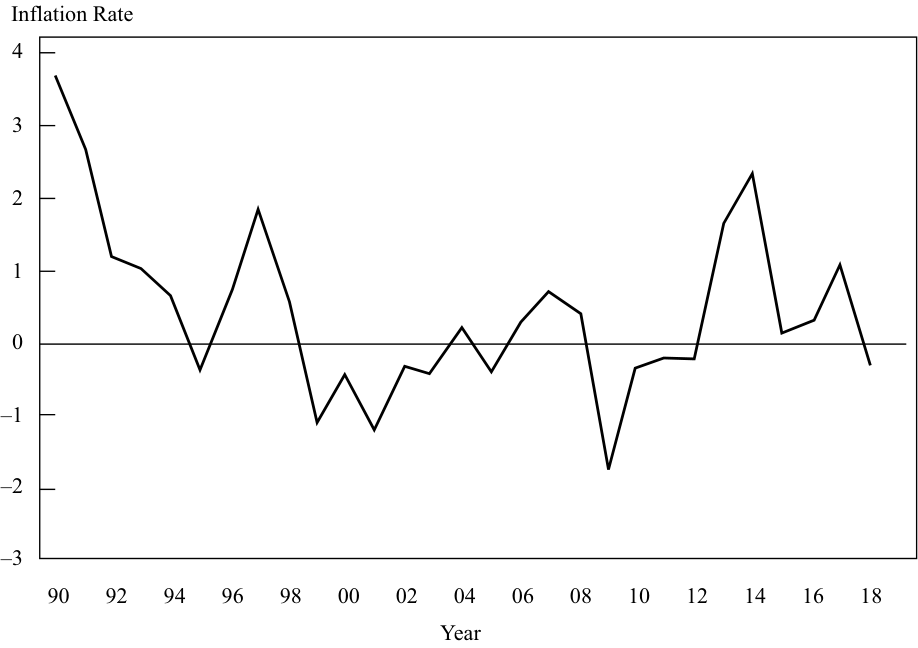

Learning Module 4 Monetary Policy - Part 2: Monetary Policy Objectives
Volume 2: Economics
Learning Module 4 Monetary Policy
Part 2/3: Monetary Policy Objectives (PDF Pages 124–139)
Tập 2: Kinh tế học (Volume 2: Economics)
Học phần 4: Chính sách Tiền tệ (Learning Module 4: Monetary Policy)
Phần 2/3: Các Mục tiêu của Chính sách Tiền tệ (Monetary Policy Objectives) (Trang PDF 124–139)
- C. Commercial and interbank interest rates move inversely to official interest rates.
- C. Lãi suất thương mại và lãi suất liên ngân hàng biến động ngược chiều với lãi suất chính thức.
Solution:
Lời giải (Solution):
A is correct. Central bank activities are typically intended to maintain price stability. B is not correct because the transmission channels of monetary policy are not independent.
A là đáp án đúng. Các hoạt động của ngân hàng trung ương thường nhằm mục đích duy trì sự ổn định giá cả. B không đúng bởi vì các kênh truyền dẫn của chính sách tiền tệ không độc lập với nhau.
4
4
MONETARY POLICY OBJECTIVES
CÁC MỤC TIÊU CỦA CHÍNH SÁCH TIỀN TỆ (MONETARY POLICY OBJECTIVES)
describe qualities of effective central banks; contrast their use of inflation, interest rate, and exchange rate targeting in expansionary or contractionary monetary policy; and describe the limitations of monetary policy
Mô tả những phẩm chất của các ngân hàng trung ương hiệu quả; đối chiếu việc sử dụng mục tiêu lạm phát, lãi suất và tỷ giá hối đoái của chúng trong chính sách tiền tệ mở rộng hoặc thu hẹp; và mô tả những hạn chế của chính sách tiền tệ (describe qualities of effective central banks; contrast their use of inflation, interest rate, and exchange rate targeting in expansionary or contractionary monetary policy; and describe the limitations of monetary policy)
Inflation Targeting
Nhắm mục tiêu Lạm phát (Inflation Targeting)
Throughout the 1990s, a consensus began to build among both central bankers and politicians that the best way to control inflation and thereby maintain price stability was to target a certain level of inflation and to ensure that this target was met by monitoring a wide range of monetary, financial, and real economic variables. Today, inflation-targeting frameworks are the cornerstone of monetary policy and macroeconomic policy in many economies. Exhibit 4 shows the growth in the number of inflation-targeting monetary policy regimes over time.
Trong suốt những năm 1990, một sự đồng thuận đã bắt đầu hình thành giữa cả các nhà hoạch định ngân hàng trung ương và các chính trị gia rằng cách tốt nhất để kiểm soát lạm phát và qua đó duy trì sự ổn định giá cả là nhắm mục tiêu vào một mức lạm phát nhất định và đảm bảo đạt được mục tiêu này bằng cách giám sát một loạt các biến số tiền tệ, tài chính và kinh tế thực. Ngày nay, các khuôn khổ nhắm mục tiêu lạm phát (inflation-targeting frameworks) là nền tảng của chính sách tiền tệ và chính sách kinh tế vĩ mô ở nhiều nền kinh tế. Minh họa 4 cho thấy sự gia tăng số lượng các cơ chế chính sách tiền tệ nhắm mục tiêu lạm phát theo thời gian.
The inflation-targeting framework that is now commonly practiced was pioneered in New Zealand. In 1988, the New Zealand Minister of Finance, Roger Douglas, announced that economic policy would focus on bringing inflation down from the prevailing level of around 6 percent to a target range of 0 to 2 percent. This goal was given legal status by the Reserve Bank of New Zealand Act 1989. As part of the Act, the Reserve Bank of New Zealand (RBNZ) was given the role of pursuing this target. The bank was given operational independence ; it was free to set interest rates in the way that it thought would best meet the inflation target. Although the RBNZ had independent control of monetary policy, it was still accountable to the government and was charged with communicating its decisions in a clear and transparent way. As Exhibit 4 shows, the New Zealand model was widely copied.
Khuôn khổ nhắm mục tiêu lạm phát hiện đang được áp dụng phổ biến đã được tiên phong tại New Zealand. Vào năm 1988, Bộ trưởng Tài chính New Zealand, Roger Douglas, đã công bố rằng chính sách kinh tế sẽ tập trung vào việc kéo giảm lạm phát từ mức hiện hành khoảng 6% xuống vùng mục tiêu từ 0 đến 2%. Mục tiêu này đã được trao địa vị pháp lý bởi Đạo luật Ngân hàng Dự trữ New Zealand năm 1989 (Reserve Bank of New Zealand Act 1989). Là một phần của Đạo luật này, Ngân hàng Dự trữ New Zealand (RBNZ) được giao vai trò theo đuổi mục tiêu này. Ngân hàng đã được trao tính độc lập trong hoạt động (operational independence); ngân hàng được tự do thiết lập lãi suất theo cách mà họ cho rằng sẽ đáp ứng tốt nhất mục tiêu lạm phát. Mặc dù RBNZ có quyền kiểm soát độc lập đối với chính sách tiền tệ, ngân hàng này vẫn phải giải trình trước chính phủ và có trách nhiệm truyền thông các quyết định của mình một cách rõ ràng và minh bạch. Như Minh họa 4 cho thấy, mô hình New Zealand đã được sao chép rộng rãi.
Exhibit 4: The Progressive Adoption of Inflation Targeting by Central Banks
Minh họa 4: Việc Áp dụng Lần lượt Khuôn khổ Nhắm mục tiêu Lạm phát của các Ngân hàng Trung ương (Exhibit 4: The Progressive Adoption of Inflation Targeting by Central Banks)
| 1989 | New Zealand | |||
|---|---|---|---|---|
| 1990 | Chile | Canada | ||
| 1991 | Israel | United Kingdom | ||
| 1992 | Sweden | Finland | Australia | |
| 1995 | Spain | |||
| 1998 | Czech Republic | South Korea | Poland | |
| 1999 | Mexico | Brazil | Colombia | ECB |
| 2000 | South Africa | Thailand |
| Năm | Các quốc gia / Ngân hàng Trung ương | ||||
|---|---|---|---|---|---|
| 1989 | New Zealand | ||||
| 1990 | Chile | Canada | |||
| 1991 | Israel | Vương quốc Anh (United Kingdom) | |||
| 1992 | Thụy Điển (Sweden) | Phần Lan (Finland) | Úc (Australia) | ||
| 1995 | Tây Ban Nha (Spain) | ||||
| 1998 | Cộng hòa Séc (Czech Republic) | Hàn Quốc (South Korea) | Ba Lan (Poland) | ||
| 1999 | Mexico | Brazil | Colombia | ECB | |
| 2000 | Nam Phi (South Africa) | Thái Lan (Thailand) |
| 2001 | Iceland | Norway | Hungary | Peru | Philippines |
|---|---|---|---|---|---|
| 2005 | Guatemala | Indonesia | Romania | ||
| 2006 | Turkey | Serbia | |||
| 2007 | Ghana |
| Năm | Các quốc gia / Ngân hàng Trung ương | ||||
|---|---|---|---|---|---|
| 2001 | Iceland | Na Uy (Norway) | Hungary | Peru | Philippines |
| 2005 | Guatemala | Indonesia | Romania | ||
| 2006 | Thổ Nhĩ Kỳ (Turkey) | Serbia | |||
| 2007 | Ghana |
Note: Spain and Finland later joined the EMU. Sources: For 2001 and earlier, Truman (2003). For 2002 to 2007, Roger (2010).
Lưu ý (Note): Tây Ban Nha và Phần Lan sau đó đã gia nhập Liên minh Kinh tế và Tiền tệ Châu Âu (EMU). Nguồn (Sources): Đối với năm 2001 và trước đó, Truman (2003). Đối với giai đoạn 2002 đến 2007, Roger (2010).
Although these inflation-targeting regimes vary a little from economy to economy, their success is thought to depend on three key concepts: central bank independence, credibility, and transparency.
Mặc dù các cơ chế nhắm mục tiêu lạm phát này có đôi chút khác biệt giữa các nền kinh tế, sự thành công của chúng được cho là phụ thuộc vào ba khái niệm then chốt: tính độc lập (central bank independence), mức độ tín nhiệm (credibility) và tính minh bạch (transparency) của ngân hàng trung ương.
Central Bank Independence
Tính Độc lập của Ngân hàng Trung ương (Central Bank Independence)
In most cases, the central bank that is charged with targeting inflation has a degree of independence from its government. This independence is thought to be important. It is conceivable that politicians could announce an inflation target and direct the central bank to set interest rates accordingly. Indeed, this was the process adopted in the United Kingdom between 1994 and 1997. But politicians have a constant eye on reelection and might be tempted, for example, to keep rates “too low” in the lead-up to an election in the hope that this might help their reelection prospects. As a consequence, this might lead to higher inflation. Thus, it is now widely believed that monetary policy decisions should rest in the hands of an organization that is remote from the electoral process. The central bank is the natural candidate to be the monopoly supplier of a currency.
Trong hầu hết các trường hợp, ngân hàng trung ương được giao trọng trách nhắm mục tiêu lạm phát có một mức độ độc lập nhất định khỏi chính phủ của mình. Sự độc lập này được cho là rất quan trọng. Có thể hình dung rằng các chính trị gia có thể công bố một mục tiêu lạm phát và chỉ đạo ngân hàng trung ương thiết lập lãi suất tương ứng. Thật vậy, đây từng là quy trình được áp dụng tại Vương quốc Anh trong giai đoạn từ năm 1994 đến năm 1997. Nhưng các chính trị gia luôn để mắt đến việc tái đắc cử và có thể bị cám dỗ, chẳng hạn, giữ lãi suất “quá thấp” trong giai đoạn trước thềm bầu cử với hy vọng rằng điều này có thể giúp ích cho triển vọng tái đắc cử của họ. Hệ quả là điều này có thể dẫn đến lạm phát cao hơn. Do đó, ngày nay người ta tin tưởng rộng rãi rằng các quyết định chính sách tiền tệ nên nằm trong tay một tổ chức tách biệt khỏi quy trình bầu cử. Ngân hàng trung ương là ứng cử viên tự nhiên cho vị trí nhà cung cấp độc quyền của một đồng tiền.
However, there are degrees of independence. For example, the head of the central bank is nearly always chosen by government officials. The chair of the US Federal Reserve’s Board of Governors is appointed by the president of the United States of America; the head of the ECB is chosen by the committee of Euro area finance ministers; and the governor of the Bank of England is chosen by the chancellor of the exchequer. So, in practice, separating control from political influence completely is probably an impossible (although a desirable) goal.
Tuy nhiên, có nhiều mức độ độc lập khác nhau. Ví dụ, người đứng đầu ngân hàng trung ương gần như luôn luôn được lựa chọn bởi các quan chức chính phủ. Chủ tịch Hội đồng Thống đốc Cục Dự trữ Liên bang Hoa Kỳ được bổ nhiệm bởi Tổng thống Hợp chúng quốc Hoa Kỳ; người đứng đầu ECB được lựa chọn bởi ủy ban các bộ trưởng tài chính Khu vực đồng Euro; và Thống đốc Ngân hàng Trung ương Anh được lựa chọn bởi Bộ trưởng Bộ Tài chính Anh (Chancellor of the Exchequer). Vì vậy, trên thực tế, việc tách biệt hoàn toàn quyền kiểm soát khỏi ảnh hưởng chính trị có lẽ là một mục tiêu bất khả thi (mặc dù rất đáng mong đợi).
There are further degrees of independence. Some central banks are both operationally and target independent . This means that they not only decide the level of interest rates but also determine the definition of inflation that they target, the rate of inflation that they target, and the horizon over which the target is to be achieved. The ECB has independence of this kind. By contrast, other central banks—including those in New Zealand, Sweden, and the United Kingdom—are tasked to hit a definition and level of inflation determined by the government. Therefore, these central banks are only operationally independent.
Còn có những cấp độ độc lập sâu hơn nữa. Một số ngân hàng trung ương vừa độc lập trong hoạt động vừa độc lập về mục tiêu (target independent). Điều này có nghĩa là họ không chỉ quyết định mức lãi suất mà còn xác định định nghĩa về lạm phát mà họ nhắm mục tiêu, tỷ lệ lạm phát mà họ nhắm mục tiêu, và khung thời gian (horizon) mà trong đó mục tiêu phải đạt được. ECB có sự độc lập thuộc loại này. Ngược lại, các ngân hàng trung ương khác—bao gồm các ngân hàng trung ương ở New Zealand, Thụy Điển và Vương quốc Anh—được giao nhiệm vụ đạt được định nghĩa và mức lạm phát do chính phủ xác định. Do đó, các ngân hàng trung ương này chỉ độc lập trong hoạt động (operationally independent).
Credibility
Mức độ Tín nhiệm (Credibility)
The independence of the central bank and public confidence in it are key in the design of an inflation-targeting regime.
Tính độc lập của ngân hàng trung ương và niềm tin của công chúng vào nó là yếu tố then chốt trong việc thiết kế một cơ chế nhắm mục tiêu lạm phát.
To illustrate the role of credibility, suppose that instead of the central bank, the government assumes the role of targeting inflation, but the government is heavily indebted. Given that higher inflation reduces the real value of debt, the government would have an incentive to avoid reaching the inflation target or to set a high inflation target such that price stability and confidence in the currency could be endangered. As a result, few would believe the government was really intent on controlling inflation; thus, the government would lack credibility. Many governments have very large levels of debt, especially since the 2008–2009 Global Financial Crisis. In such a situation,
Để minh họa vai trò của mức độ tín nhiệm, giả sử rằng thay vì ngân hàng trung ương, chính phủ đảm nhận vai trò nhắm mục tiêu lạm phát, nhưng chính phủ lại đang mắc nợ rất nhiều. Xét việc lạm phát cao hơn làm giảm giá trị thực của khoản nợ, chính phủ sẽ có động cơ tránh đạt tới mục tiêu lạm phát hoặc thiết lập một mục tiêu lạm phát cao đến mức sự ổn định giá cả và niềm tin vào đồng tiền có thể bị đe dọa. Kết quả là sẽ có rất ít người tin rằng chính phủ thực sự có ý định kiểm soát lạm phát; do đó, chính phủ sẽ thiếu đi sự tín nhiệm. Nhiều chính phủ có mức nợ rất lớn, đặc biệt là kể từ sau Cuộc khủng hoảng Tài chính Toàn cầu 2008–2009. Trong một tình huống như vậy,
economic agents might expect a high level of inflation, regardless of the actual, stated target. The target might have little credibility if the organization’s likelihood of sticking to it is in doubt.
các chủ thể kinh tế có thể kỳ vọng một mức lạm phát cao, bất kể mục tiêu thực tế được tuyên bố là gì. Mục tiêu có thể có rất ít sự tín nhiệm nếu khả năng tổ chức đó kiên định bám sát mục tiêu bị nghi ngờ.
If a respected central bank assumes the inflation-targeting role and if economic agents believe that the central bank will hit its target, this belief could become self-fulfilling. If everyone believes that the central bank will hit an inflation target of 2 percent next year, this expectation might be built into wage claims and other nominal contracts that would make it hit the 2 percent target. For this reason, central bankers pay a great deal of attention to inflation expectations. If these expectations were to rise rapidly, perhaps following a rapid increase in oil prices, unchecked expectations could get embedded into wage claims and eventually cause inflation to rise.
Nếu một ngân hàng trung ương có uy tín đảm nhận vai trò nhắm mục tiêu lạm phát và nếu các chủ thể kinh tế tin rằng ngân hàng trung ương sẽ đạt được mục tiêu của mình, niềm tin này có thể trở thành lời tiên tri tự ứng nghiệm (self-fulfilling). Nếu mọi người đều tin rằng ngân hàng trung ương sẽ đạt được mục tiêu lạm phát 2% vào năm tới, kỳ vọng này có thể được đưa vào các yêu cầu tiền lương và các hợp đồng danh nghĩa khác, qua đó giúp nền kinh tế thực sự đạt được mục tiêu 2%. Vì lý do này, các nhà hoạch định ngân hàng trung ương rất chú ý đến kỳ vọng lạm phát (inflation expectations). Nếu những kỳ vọng này tăng lên nhanh chóng, có lẽ sau một đợt tăng vọt của giá dầu, những kỳ vọng không được kiểm soát có thể ăn sâu vào các yêu cầu đòi tăng lương và cuối cùng khiến lạm phát thực sự tăng lên.
Transparency
Tính Minh bạch (Transparency)
One way to establish credibility is for a central bank to be transparent in its decision making. Many, if not all, independent inflation-targeting central banks produce a quarterly assessment of their economies. These inflation reports , as they are usually known, give central banks’ views on the range of indicators that they watch when they come to their (usually) monthly interest rate decision. They will consider and outline their views on the following subjects, usually in this order:
Một cách để thiết lập sự tín nhiệm là ngân hàng trung ương phải minh bạch trong quá trình ra quyết định của mình. Nhiều, nếu không muốn nói là tất cả, các ngân hàng trung ương độc lập nhắm mục tiêu lạm phát đều đưa ra bản đánh giá hàng quý về nền kinh tế của họ. Những báo cáo lạm phát (inflation reports) này, như tên gọi thường thấy của chúng, đưa ra quan điểm của các ngân hàng trung ương về một loạt các chỉ báo mà họ theo dõi khi đi đến quyết định lãi suất (thường là) hàng tháng của mình. Họ sẽ xem xét và phác thảo quan điểm của mình về các chủ đề sau đây, thường theo thứ tự này:
-
Broad money aggregates and credit conditions;
-
Conditions in financial markets;
-
Developments in the real economy (e.g., the labor market); and
-
Evolution of prices.
-
Các đại lượng cung tiền rộng và các điều kiện tín dụng (Broad money aggregates and credit conditions);
-
Các điều kiện trên thị trường tài chính (Conditions in financial markets);
-
Những diễn biến trong nền kinh tế thực (ví dụ: thị trường lao động) (Developments in the real economy); và
-
Diễn biến của giá cả (Evolution of prices).
Consideration of all of these important components of an economy is then usually followed by a forecast of growth and inflation over a medium-term horizon, usually two years.
Việc xem xét tất cả các thành phần quan trọng này của một nền kinh tế sau đó thường được nối tiếp bằng một dự báo về tăng trưởng và lạm phát trong khung thời gian trung hạn, thường là hai năm.
By explaining their views on the economy and by being transparent in decision making, the independent, inflation-targeting central banks seek to gain reputation and credibility, making it easier to influence inflation expectations and hence ultimately easier to meet the inflation target.
Bằng cách giải thích quan điểm của họ về nền kinh tế và bằng sự minh bạch trong quá trình ra quyết định, các ngân hàng trung ương độc lập nhắm mục tiêu lạm phát tìm cách tạo dựng danh tiếng và sự tín nhiệm, giúp cho việc tác động đến kỳ vọng lạm phát trở nên dễ dàng hơn và do đó suy cho cùng là dễ đạt được mục tiêu lạm phát hơn.
The Target
Mục tiêu (The Target)
Whether the target is set by the central bank or by the government for the central bank to hit, the level of the target and the horizon over which the target is to be hit is a crucial consideration in all inflation-targeting frameworks.
Cho dù mục tiêu được thiết lập bởi ngân hàng trung ương hay bởi chính phủ để ngân hàng trung ương thực hiện, mức mục tiêu và khung thời gian mà trong đó mục tiêu phải đạt được là một yếu tố xem xét cốt tử trong tất cả các khuôn khổ nhắm mục tiêu lạm phát.
Exhibit 5: A Range of Inflation Targets
Minh họa 5: Một loạt các Mục tiêu Lạm phát (Exhibit 5: A Range of Inflation Targets)
| Country/Region | |
|---|---|
| Australia | Australian Federal Reserve’s target is inflation between 2% and 3%. |
| Canada | l Bank of Canada’s target is CPI inflation within the 1% to 3% range. |
| Euro area | l ECB’s target is CPI inflation close to, but below, a ceiling of 2%. |
| South Korea | l Bank of Korea’s target since 2019 has been CPI inflation of 2%. |
| New Zealand | l The Reserve Bank of New Zealand’s target is to keep future inflation between 1% and 3% with a focus on the average future inflation rate near 2%. |
| Quốc gia / Khu vực (Country/Region) | Mục tiêu Lạm phát |
|---|---|
| Úc (Australia) | Mục tiêu của Ngân hàng Dự trữ Úc là lạm phát nằm trong khoảng từ 2% đến 3%. |
| Canada | Mục tiêu của Ngân hàng Trung ương Canada (Bank of Canada) là lạm phát CPI nằm trong biên độ từ 1% đến 3%. |
| Khu vực đồng Euro (Euro area) | Mục tiêu của ECB là lạm phát CPI ở mức gần với, nhưng thấp hơn, mức trần 2%. |
| Hàn Quốc (South Korea) | Mục tiêu của Ngân hàng Trung ương Hàn Quốc (Bank of Korea) kể từ năm 2019 là lạm phát CPI ở mức 2%. |
| New Zealand | Mục tiêu của Ngân hàng Dự trữ New Zealand là giữ lạm phát tương lai nằm trong khoảng từ 1% đến 3% với trọng tâm là tỷ lệ lạm phát tương lai bình quân ở gần mức 2%. |
| Country/Region | |
|---|---|
| Sweden | Riksbank’s target is CPI inflation within ±1.0 percentage point of 2%. |
| United Kingdom | Bank of England’s target is CPI inflation within ±1.0 percentage point of 2%. |
| Quốc gia / Khu vực (Country/Region) | Mục tiêu Lạm phát |
|---|---|
| Thụy Điển (Sweden) | Mục tiêu của Riksbank là lạm phát CPI nằm trong biên độ $\pm 1.0$ điểm phần trăm quanh mức 2%. |
| Vương quốc Anh (United Kingdom) | Mục tiêu của Ngân hàng Trung ương Anh (Bank of England) là lạm phát CPI nằm trong biên độ $\pm 1.0$ điểm phần trăm quanh mức 2%. |
Note: CPI, consumer price index.
Lưu ý (Note): CPI là chỉ số giá tiêu dùng (consumer price index).
Source: Central bank websites (http:// www .bis .org/ cbanks .htm).
Nguồn (Source): Trang web của các ngân hàng trung ương (http://www.bis.org/cbanks.htm).
Exhibit 5 shows that many central banks in developed economies target an inflation rate of 2 percent based on a consumer price index (CPI). Given that the operation of monetary policy is both art and science, the banks are normally allowed a range around the central target of +1 percent or –1 percent. For example, with a 2 percent target, they would be tasked to keep inflation between 1 percent and 3 percent. But why target 2 percent and not 0 percent?
Minh họa 5 cho thấy nhiều ngân hàng trung ương ở các nền kinh tế phát triển nhắm mục tiêu tỷ lệ lạm phát ở mức 2% dựa trên chỉ số giá tiêu dùng (CPI). Xét việc vận hành chính sách tiền tệ vừa là nghệ thuật vừa là khoa học, các ngân hàng thông thường được cho phép một biên độ dao động xung quanh mục tiêu trung tâm là $+1\%$ hoặc $-1\%$. Ví dụ, với mục tiêu 2%, họ sẽ được giao nhiệm vụ giữ lạm phát trong khoảng từ 1% đến 3%. Nhưng tại sao lại nhắm mục tiêu 2% mà không phải là 0%?
The answer is that aiming to hit 0 percent could result in negative inflation, known as deflation . One of the limitations of monetary policy that we will discuss is its ability or inability to deal with periods of deflation. If deflation is something to be avoided, why not target 10 percent? The answer to this question is that levels of inflation that high would not be consistent with price stability; such a high inflation rate would further tend to be associated with high inflation volatility and uncertainty. Central bankers seem to agree that 2 percent is far enough away from the risks of deflation and low enough not to lead to destabilizing inflation shocks.
Câu trả lời là việc nhắm tới mức 0% có thể dẫn đến lạm phát âm, được gọi là giảm phát (deflation). Một trong những hạn chế của chính sách tiền tệ mà chúng ta sẽ thảo luận là khả năng hoặc sự bất lực của nó trong việc đối phó với các giai đoạn giảm phát. Nếu giảm phát là điều cần tránh, tại sao không nhắm mục tiêu 10%? Câu trả lời cho câu hỏi này là mức lạm phát cao như vậy sẽ không nhất quán với sự ổn định giá cả; một tỷ lệ lạm phát cao như vậy sẽ còn có xu hướng gắn liền với sự biến động và bất định lạm phát ở mức cao. Các nhà hoạch định ngân hàng trung ương dường như đồng ý rằng mức 2% là đủ xa khỏi các rủi ro giảm phát và đủ thấp để không dẫn đến những cú sốc lạm phát gây mất ổn định.
Finally, we should keep in mind that the headline inflation rate that is announced in most economies every month, and which is the central bank’s target, is a measure of how much a basket of goods and services has risen over the previous twelve months. It is history. Furthermore, interest rate changes made today will take some time to have their full effect on the real economy as they make their way through the monetary transmission mechanism. It is for these two reasons that inflation targeters do not target current inflation but instead usually focus on inflation two years ahead.
Cuối cùng, chúng ta nên ghi nhớ rằng tỷ lệ lạm phát toàn phần (headline inflation rate) được công bố ở hầu hết các nền kinh tế hàng tháng, và là mục tiêu của ngân hàng trung ương, là một thước đo xem một giỏ hàng hóa và dịch vụ đã tăng giá bao nhiêu trong mười hai tháng trước đó. Nó thuộc về lịch sử quá khứ. Hơn nữa, những thay đổi lãi suất được thực hiện ngày hôm nay sẽ mất một khoảng thời gian để phát huy toàn bộ tác dụng của chúng lên nền kinh tế thực khi chúng đi qua cơ chế truyền dẫn tiền tệ. Chính vì hai lý do này mà các cơ quan nhắm mục tiêu lạm phát không nhắm vào lạm phát hiện tại mà thay vào đó thường tập trung vào lạm phát của hai năm tới (two years ahead).
Although inflation-targeting mandates may vary from country to country, they have common elements: the specification of an explicit inflation target, with permissible bounds, and a requirement that the central bank should be transparent in its objectives and policy actions. This is all usually laid out in legislation that imposes statutory obligations on the central bank. As mentioned earlier, New Zealand pioneered the inflation-targeting approach to monetary policy that has since been copied widely. New Zealand’s Policy Targets Agreement, which specifies the inflation-targeting mandate of its central bank, the RBNZ, is included in Example 2.
Mặc dù các nhiệm vụ nhắm mục tiêu lạm phát (inflation-targeting mandates) có thể khác nhau giữa các quốc gia, chúng đều có những yếu tố chung: việc quy định một mục tiêu lạm phát rõ ràng, với các biên độ cho phép, và yêu cầu ngân hàng trung ương phải minh bạch trong các mục tiêu và hành động chính sách của mình. Tất cả những điều này thường được quy định trong luật pháp áp đặt các nghĩa vụ theo luật định lên ngân hàng trung ương. Như đã đề cập trước đó, New Zealand đã tiên phong trong cách tiếp cận nhắm mục tiêu lạm phát đối với chính sách tiền tệ mà kể từ đó đã được sao chép rộng rãi. Thỏa thuận Mục tiêu Chính sách của New Zealand (New Zealand’s Policy Targets Agreement), quy định nhiệm vụ nhắm mục tiêu lạm phát của ngân hàng trung ương nước này (RBNZ), được đưa vào trong Ví dụ 2.
EXAMPLE 2
VÍ DỤ 2 (EXAMPLE 2)
New Zealand’s Policy Targets Agreement
Thỏa thuận Mục tiêu Chính sách của New Zealand (New Zealand’s Policy Targets Agreement)
“This agreement between the Minister of Finance and the Governor of the Reserve Bank of New Zealand (the Bank) is made under section 9 of the Reserve Bank of New Zealand Act 1989 (the Act). The Minister and the Governor agree as follows:
“Thỏa thuận này giữa Bộ trưởng Tài chính và Thống đốc Ngân hàng Dự trữ New Zealand (Ngân hàng) được lập theo mục 9 của Đạo luật Ngân hàng Dự trữ New Zealand năm 1989 (Đạo luật). Bộ trưởng và Thống đốc thỏa thuận như sau:
Price stability
Ổn định giá cả (Price stability)
- a. Under Section 8 of the Act the Reserve Bank is required to conduct monetary policy with the goal of maintaining a stable general level of prices.
- a. Theo Mục 8 của Đạo luật, Ngân hàng Dự trữ được yêu cầu điều hành chính sách tiền tệ với mục tiêu duy trì mức giá chung ổn định.
- b. The Government’s economic objective is to promote a growing, open and competitive economy as the best means of delivering permanently higher incomes and living standards for New Zealanders. Price stability plays an important part in supporting this objective.
- b. Mục tiêu kinh tế của Chính phủ là thúc đẩy một nền kinh tế đang phát triển, cởi mở và có tính cạnh tranh như là phương tiện tốt nhất để mang lại thu nhập và mức sống cao hơn một cách bền vững lâu dài cho người dân New Zealand. Sự ổn định giá cả đóng một vai trò quan trọng trong việc hỗ trợ mục tiêu này.
Policy target
Mục tiêu chính sách (Policy target)
-
a. In pursuing the objective of a stable general level of prices, the Bank shall monitor prices as measured by a range of price indexes. The price stability target will be defined in terms of the All Groups Consumers Price Index (CPI), as published by Statistics New Zealand.
-
b. For the purpose of this agreement, the policy target shall be to keep future CPI inflation outcomes between 1 per cent and 3 per cent on average over the medium term.
-
a. Khi theo đuổi mục tiêu về một mức giá chung ổn định, Ngân hàng sẽ giám sát giá cả được đo lường bởi một loạt các chỉ số giá. Mục tiêu ổn định giá cả sẽ được định nghĩa theo Chỉ số Giá Tiêu dùng Tất cả các Nhóm (All Groups Consumers Price Index – CPI), như được công bố bởi Cơ quan Thống kê New Zealand (Statistics New Zealand).
-
b. Vì mục đích của thỏa thuận này, mục tiêu chính sách sẽ là giữ cho kết quả lạm phát CPI trong tương lai nằm trong khoảng từ 1 phần trăm đến 3 phần trăm tính trung bình trong trung hạn.
Inflation variations around target
Biến động lạm phát quanh mức mục tiêu (Inflation variations around target)
-
a. For a variety of reasons, the actual annual rate of CPI inflation will vary around the medium-term trend of inflation, which is the focus of the policy target. Amongst these reasons, there is a range of events whose impact would normally be temporary. Such events include, for example, shifts in the aggregate price level as a result of exceptional movements in the prices of commodities traded in world markets, changes in indirect taxes,9 significant government policy changes that directly affect prices, or a natural disaster affecting a major part of the economy.
-
b. When disturbances of the kind described in clause 3(a) arise, the Bank will respond consistent with meeting its medium-term target.
-
a. Vì nhiều lý do khác nhau, tỷ lệ lạm phát CPI hàng năm thực tế sẽ biến thiên xung quanh xu hướng lạm phát trung hạn, vốn là trọng tâm của mục tiêu chính sách. Trong số những lý do này, có một loạt các sự kiện mà tác động của chúng thông thường chỉ mang tính tạm thời. Những sự kiện như vậy bao gồm, ví dụ, những sự dịch chuyển trong mức giá chung do kết quả của những biến động bất thường trong giá của các loại hàng hóa thương phẩm (commodities) được giao dịch trên các thị trường thế giới, những thay đổi trong thuế gián thu,$^9$ những thay đổi chính sách quan trọng của chính phủ tác động trực tiếp đến giá cả, hoặc một thảm họa thiên nhiên ảnh hưởng đến một phần lớn của nền kinh tế.
-
b. Khi phát sinh những nhiễu loạn thuộc loại được mô tả trong khoản 3(a), Ngân hàng sẽ phản ứng một cách nhất quán với việc đáp ứng mục tiêu trung hạn của mình.
Communication, implementation, and accountability
Truyền thông, thực thi và trách nhiệm giải trình (Communication, implementation, and accountability)
-
a. On occasions when the annual rate of inflation is outside the medium-term target range, or when such occasions are projected, the Bank shall explain in Policy Statements made under section 15 of the Act why such outcomes have occurred, or are projected to occur, and what measures it has taken, or proposes to take, to ensure that inflation outcomes remain consistent with the medium-term target.
-
b. In pursuing its price stability objective, the Bank shall implement monetary policy in a sustainable, consistent, and transparent manner and shall seek to avoid unnecessary instability in output, interest rates and the exchange rate.
-
c. The Bank shall be fully accountable for its judgments and actions in implementing monetary policy.”
-
a. Vào những dịp khi tỷ lệ lạm phát hàng năm nằm ngoài biên độ mục tiêu trung hạn, hoặc khi những dịp như vậy được dự phóng sẽ xảy ra, Ngân hàng sẽ giải thích trong các Tuyên bố Chính sách (Policy Statements) được lập theo mục 15 của Đạo luật tại sao những kết quả như vậy lại xảy ra, hoặc được dự phóng sẽ xảy ra, và những biện pháp nào Ngân hàng đã thực hiện, hoặc đề xuất thực hiện, để đảm bảo rằng các kết quả lạm phát vẫn nhất quán với mục tiêu trung hạn.
-
b. Khi theo đuổi mục tiêu ổn định giá cả của mình, Ngân hàng sẽ thực thi chính sách tiền tệ một cách bền vững, nhất quán và minh bạch và sẽ tìm cách tránh gây ra sự mất ổn định không cần thiết đối với sản lượng, lãi suất và tỷ giá hối đoái.
-
c. Ngân hàng sẽ hoàn toàn chịu trách nhiệm giải trình về các phán đoán và hành động của mình trong việc thực thi chính sách tiền tệ.”
Source: Reserve Bank of New Zealand, http:// www .rbnz .govt .nz/ .
Nguồn (Source): Ngân hàng Dự trữ New Zealand (Reserve Bank of New Zealand), http://www.rbnz.govt.nz/.
To summarize, an inflation-targeting framework normally has the following features:
Tóm lại, một khuôn khổ nhắm mục tiêu lạm phát thông thường có các đặc điểm sau đây:
-
An independent and credible central bank;
-
A commitment to transparency;
-
A decision-making framework that considers a wide range of economic and financial market indicators; and
-
A clear, symmetric, and forward-looking medium-term inflation target, sufficiently above 0 percent to avoid the risk of deflation but low enough to ensure a significant degree of price stability.
-
Một ngân hàng trung ương độc lập và có mức độ tín nhiệm cao (An independent and credible central bank);
-
Cam kết về tính minh bạch (A commitment to transparency);
-
Một khuôn khổ ra quyết định xem xét một loạt các chỉ báo kinh tế và thị trường tài chính (A decision-making framework that considers a wide range of economic and financial market indicators); và
-
Một mục tiêu lạm phát trung hạn rõ ràng, đối xứng và hướng tới tương lai (clear, symmetric, and forward-looking medium-term inflation target), cao hơn 0% một mức vừa đủ để tránh rủi ro giảm phát nhưng đủ thấp để đảm bảo một mức độ ổn định giá cả đáng kể.
Indeed, independence, credibility, and transparency are arguably the crucial ingredients for an effective central bank, whether or not they target inflation.
Thật vậy, tính độc lập, mức độ tín nhiệm và tính minh bạch có thể coi là những thành tố cốt tử cho một ngân hàng trung ương hiệu quả, cho dù họ có nhắm mục tiêu lạm phát hay không.
The Main Exceptions to the Inflation-Targeting Rule
Những Ngoại lệ Chính đối với Quy tắc Nhắm mục tiêu Lạm phát (The Main Exceptions to the Inflation-Targeting Rule)
Although the practice of inflation targeting is widespread, two prominent central banks have not adopted a formal inflation target along the lines of the New Zealand model: the Bank of Japan (BoJ) and the US Federal Reserve System.
Mặc dù thông lệ nhắm mục tiêu lạm phát rất phổ biến, hai ngân hàng trung ương lỗi lạc đã không áp dụng một mục tiêu lạm phát chính thức theo hướng mô hình của New Zealand: Ngân hàng Trung ương Nhật Bản (Bank of Japan – BoJ) và Hệ thống Dự trữ Liên bang Hoa Kỳ (US Federal Reserve System).
The Bank of Japan
Ngân hàng Trung ương Nhật Bản (The Bank of Japan)
Japan’s central bank, the BoJ, does not target an explicit measure of inflation. Japan’s government and its monetary authorities have been trying to combat deflation for much of the past two decades. However, despite their efforts—including the outright printing of money—inflation has remained very weak. Inflation targeting is seen very much as a way of combating and controlling inflation; as such, it would seem to have no place in an economy that suffers from persistent deflation.
Ngân hàng trung ương của Nhật Bản, BoJ, không nhắm mục tiêu vào một thước đo lạm phát cụ thể rõ ràng nào. Chính phủ Nhật Bản và các cơ quan quản lý tiền tệ của nước này đã cố gắng chống lại tình trạng giảm phát trong phần lớn thời gian của hai thập kỷ qua. Tuy nhiên, bất chấp những nỗ lực của họ—bao gồm cả việc in tiền trực tiếp—lạm phát vẫn duy trì ở mức rất yếu. Việc nhắm mục tiêu lạm phát được nhìn nhận phần nhiều như một cách thức để chống lại và kiểm soát lạm phát; do đó, nó dường như không có chỗ đứng trong một nền kinh tế đang phải gánh chịu tình trạng giảm phát dai dẳng.
Some economists have argued, however, that an inflation target is exactly what the Japanese economy needs. By announcing that positive inflation of say 3 percent is desired by the central bank, this might become a self-fulfilling prophecy if Japanese consumers and companies factor this target into nominal wage and price contracts. But for economic agents to believe that the target will be achieved, they have to believe that the central bank is capable of achieving it. Given that the BoJ has failed to engineer persistent, positive inflation, it is debatable how much credibility Japanese households and corporations would afford such an inflation-targeting policy.
Tuy nhiên, một số nhà kinh tế học đã lập luận rằng một mục tiêu lạm phát chính xác là những gì nền kinh tế Nhật Bản cần. Bằng cách công bố rằng mức lạm phát dương, chẳng hạn 3%, là điều được ngân hàng trung ương mong muốn, điều này có thể trở thành một lời tiên tri tự ứng nghiệm nếu người tiêu dùng và các công ty Nhật Bản đưa mục tiêu này vào các hợp đồng tiền lương và giá cả danh nghĩa. Nhưng để các chủ thể kinh tế tin rằng mục tiêu sẽ đạt được, họ phải tin rằng ngân hàng trung ương có đủ năng lực để đạt được nó. Xét việc BoJ đã thất bại trong việc tạo ra mức lạm phát dương, dai dẳng, việc các hộ gia đình và tập đoàn Nhật Bản sẽ dành bao nhiêu sự tín nhiệm cho một chính sách nhắm mục tiêu lạm phát như vậy vẫn là điều gây tranh cãi.
The US Federal Reserve System
Hệ thống Dự trữ Liên bang Hoa Kỳ (The US Federal Reserve System)
It is perhaps rather ironic that the world’s most influential central bank, the US Federal Reserve, which controls the supply of the world’s de facto reserve currency, the US dollar, does not have an explicit inflation target. However, it is felt that the single-minded pursuit of inflation might not be compatible with the Fed’s statutory goal as laid out in the Federal Reserve Act, which charges the Fed’s board to: “promote effectively the goals of maximum employment, stable prices, and moderate long-term interest rates.”
Có lẽ khá trớ trêu khi ngân hàng trung ương có ảnh hưởng lớn nhất thế giới, Cục Dự trữ Liên bang Hoa Kỳ (US Federal Reserve), cơ quan kiểm soát nguồn cung của đồng tiền dự trữ trên thực tế (de facto reserve currency) của thế giới là đồng đô la Mỹ, lại không có một mục tiêu lạm phát chính thức rõ ràng. Tuy nhiên, người ta cảm thấy rằng việc chỉ chuyên tâm theo đuổi mục tiêu lạm phát có thể không tương thích với mục tiêu theo luật định của Fed như được quy định trong Đạo luật Dự trữ Liên bang (Federal Reserve Act), vốn giao trọng trách cho hội đồng quản trị của Fed phải: “thúc đẩy một cách hiệu quả các mục tiêu toàn dụng nhân công tối đa, giá cả ổn định, và lãi suất dài hạn ở mức vừa phải.”
In other words, it has been argued that inflation targeting might compromise the goal of “maximum employment.” In practice, however, the Fed has indicated that it sees core inflation measured by the personal consumption expenditure (PCE) deflator of about, or just below, 2 percent as being compatible with “stable prices.” Financial markets therefore watch this US inflation gauge very carefully to anticipate the rate actions of the Fed.
Nói cách khác, người ta lập luận rằng việc nhắm mục tiêu lạm phát có thể làm tổn hại đến mục tiêu “toàn dụng nhân công tối đa” (“maximum employment”). Tuy nhiên, trên thực tế, Fed đã chỉ ra rằng họ coi mức lạm phát lõi (core inflation) được đo lường bởi chỉ số giảm phát chi tiêu tiêu dùng cá nhân (personal consumption expenditure – PCE deflator) ở mức khoảng, hoặc ngay dưới, 2% là tương thích với “giá cả ổn định”. Do đó, các thị trường tài chính theo dõi thước đo lạm phát này của Hoa Kỳ rất kỹ lưỡng để dự đoán các hành động lãi suất của Fed.
Monetary Policy in Developing Countries
Chính sách Tiền tệ tại các Quốc gia Đang phát triển (Monetary Policy in Developing Countries)
Developing economies often face significant impediments to the successful operation of any monetary policy—that is, the achievement of price stability. These include:
Các nền kinh tế đang phát triển thường phải đối mặt với những trở ngại đáng kể đối với việc vận hành thành công bất kỳ chính sách tiền tệ nào—tức là việc đạt được sự ổn định giá cả. Những trở ngại này bao gồm:
-
the absence of a sufficiently liquid government bond market and developed interbank market through which monetary policy can be conducted;
-
a rapidly changing economy, making it difficult to understand what the neutral rate might be and what the equilibrium relationship between monetary aggregates and the real economy might be;
-
rapid financial innovation that frequently changes the definition of the money supply;
-
a poor track record in controlling inflation in the past, making monetary policy intentions less credible; and
-
sự thiếu vắng một thị trường trái phiếu chính phủ đủ thanh khoản và một thị trường liên ngân hàng phát triển mà thông qua đó chính sách tiền tệ có thể được tiến hành;
-
một nền kinh tế thay đổi nhanh chóng, gây khó khăn cho việc hiểu được mức lãi suất trung lập (neutral rate) có thể là bao nhiêu và mối quan hệ cân bằng giữa các đại lượng tiền tệ và nền kinh tế thực có thể là gì;
-
sự đổi mới tài chính nhanh chóng thường xuyên làm thay đổi định nghĩa về cung tiền;
-
thành tích yếu kém trong việc kiểm soát lạm phát trong quá khứ, làm cho các ý định chính sách tiền tệ trở nên kém đáng tin cậy hơn; và
- an unwillingness of governments to grant genuine independence to the central bank.
- sự thiếu sẵn lòng của các chính phủ trong việc trao quyền độc lập thực sự cho ngân hàng trung ương.
Taken together, any or all of these impediments might call into question the effectiveness of any developing economy’s monetary policy framework, making any related monetary policy goals difficult to achieve.
Xét tổng thể cùng nhau, bất kỳ hoặc tất cả những trở ngại này có thể đặt dấu hỏi về tính hiệu quả của bất kỳ khuôn khổ chính sách tiền tệ nào của một nền kinh tế đang phát triển, làm cho bất kỳ mục tiêu chính sách tiền tệ liên quan nào cũng trở nên khó đạt được.
QUESTION SET
BỘ CÂU HỎI (QUESTION SET)
- The reason some inflation-targeting banks may target low inflation and not zero percent inflation is best described by which of the following statements?
-
A. Some inflation is viewed as being good for an economy.
-
B. It is very difficult to eliminate all inflation from a modern economy.
-
C. Targeting zero percent inflation runs a higher risk of a deflationary outcome.
- Lý do tại sao một số ngân hàng nhắm mục tiêu lạm phát có thể nhắm mục tiêu vào mức lạm phát thấp chứ không phải mức lạm phát 0% được mô tả đúng nhất bởi phát biểu nào sau đây?
-
A. Một chút lạm phát được coi là tốt cho một nền kinh tế.
-
B. Rất khó để loại bỏ toàn bộ lạm phát khỏi một nền kinh tế hiện đại.
-
C. Việc nhắm mục tiêu lạm phát 0% mang lại rủi ro cao hơn về việc xảy ra kết cục giảm phát (deflationary outcome).
Solution:
Lời giải (Solution):
C is correct. Inflation targeting is art, not science. Sometimes inflation will be above target and sometimes below. Were central banks to target zero percent, then inflation would almost certainly be negative on some occasions. If a deflationary mindset then sets in among economic agents, it might be difficult for the central bank to respond to this because they cannot cut interest rates much below zero.
C là đáp án đúng. Nhắm mục tiêu lạm phát là nghệ thuật, không phải là khoa học chính xác tuyệt đối. Đôi khi lạm phát sẽ cao hơn mục tiêu và đôi khi thấp hơn. Nếu các ngân hàng trung ương nhắm mục tiêu 0%, thì lạm phát gần như chắc chắn sẽ âm vào một số dịp. Nếu tâm lý giảm phát (deflationary mindset) sau đó ăn sâu vào các chủ thể kinh tế, ngân hàng trung ương có thể gặp khó khăn trong việc phản ứng lại điều này bởi vì họ không thể cắt giảm lãi suất xuống thấp hơn mức 0 quá nhiều.
- The degree of credibility that a central bank is afforded by economic agents is important because:
-
A. they are the lender of last resort.
-
B. they set targets that can become self-fulfilling prophecies.
-
C. they are the monopolistic suppliers of the currency.
-
Solution:
- Mức độ tín nhiệm mà một ngân hàng trung ương được các chủ thể kinh tế dành cho là rất quan trọng bởi vì:
-
A. họ là người cho vay cuối cùng.
-
B. họ thiết lập các mục tiêu có thể trở thành những lời tiên tri tự ứng nghiệm (self-fulfilling prophecies).
-
C. họ là những nhà cung cấp độc quyền của đồng tiền.
-
Lời giải (Solution):
B is correct. If a central bank operates within an inflation-targeting regime and if economic agents believe that it will achieve its target, this expectation will become embedded into wage negotiations, for example, and become a self-fulfilling prophecy. Also, banks need to be confident that the central bank will lend them money when all other sources are closed to them; otherwise, they might curtail their lending drastically, leading to a commensurate reduction in money and economic activity.
B là đáp án đúng. Nếu một ngân hàng trung ương hoạt động trong một cơ chế nhắm mục tiêu lạm phát và nếu các chủ thể kinh tế tin rằng ngân hàng trung ương sẽ đạt được mục tiêu của mình, kỳ vọng này sẽ được gắn kết vào các cuộc đàm phán tiền lương, chẳng hạn, và trở thành một lời tiên tri tự ứng nghiệm. Ngoài ra, các ngân hàng cần phải tự tin rằng ngân hàng trung ương sẽ cho họ vay tiền khi tất cả các nguồn khác đều đóng cửa đối với họ; nếu không, họ có thể cắt giảm mạnh hoạt động cho vay của mình, dẫn đến sự sụt giảm tương ứng trong tiền tệ và hoạt động kinh tế.
- A central bank that decides the desired levels of interest rates and inflation and the horizon over which the inflation objective is to be achieved is most accurately described as being:
-
A. target independent and operationally independent.
-
B. target independent but not operationally independent.
-
C. operationally independent but not target independent.
-
Solution:
- Một ngân hàng trung ương tự quyết định các mức lãi suất và lạm phát mong muốn cũng như khung thời gian mà trong đó mục tiêu lạm phát phải đạt được sẽ được mô tả chính xác nhất là:
-
A. độc lập về mục tiêu và độc lập trong hoạt động (target independent and operationally independent).
-
B. độc lập về mục tiêu nhưng không độc lập trong hoạt động (target independent but not operationally independent).
-
C. độc lập trong hoạt động nhưng không độc lập về mục tiêu (operationally independent but not target independent).
-
Lời giải (Solution):
A is correct. The central bank described is target independent because it set its own targets (e.g., the target inflation rate) and operationally independent because it decides how to achieve its targets (e.g., the time horizon).
A là đáp án đúng. Ngân hàng trung ương được mô tả là độc lập về mục tiêu bởi vì nó tự thiết lập các mục tiêu của riêng mình (ví dụ: tỷ lệ lạm phát mục tiêu) và độc lập trong hoạt động bởi vì nó tự quyết định cách thức để đạt được các mục tiêu của mình (ví dụ: khung thời gian).
Exchange Rate Targeting
Nhắm mục tiêu Tỷ giá Hối đoái (Exchange Rate Targeting)
Many developing economies choose to operate monetary policy by targeting their currency’s exchange rate, rather than an explicit level of domestic inflation. Such targeting involves setting a fixed level or band of values for the exchange rate against a major currency, with the central bank supporting the target by buying and selling the national currency in foreign exchange markets. There are recent examples of developed economies using such an approach. In the 1980s, following the failure of its policy of trying to control UK inflation by setting medium-term goals for money supply growth, the UK government decided to operate monetary policy such that the sterling’s exchange rate equaled a predetermined value in terms of German deutschemarks. The basic idea is that by tying a domestic economy’s currency to that of an economy with a credible policy of maintaining low inflation, the domestic economy would effectively “import” the inflation experience of the low-inflation economy.
Nhiều nền kinh tế đang phát triển lựa chọn vận hành chính sách tiền tệ bằng cách nhắm mục tiêu vào tỷ giá hối đoái của đồng tiền nước mình, hơn là một mức lạm phát trong nước cụ thể. Việc nhắm mục tiêu như vậy bao gồm việc thiết lập một mức cố định hoặc một biên độ giá trị (band of values) cho tỷ giá hối đoái so với một đồng tiền lớn, với việc ngân hàng trung ương hỗ trợ mục tiêu đó bằng cách mua và bán đồng nội tệ trên các thị trường ngoại hối. Có những ví dụ gần đây về các nền kinh tế phát triển cũng sử dụng cách tiếp cận như vậy. Vào những năm 1980, sau sự thất bại của chính sách cố gắng kiểm soát lạm phát ở Vương quốc Anh bằng cách thiết lập các mục tiêu trung hạn cho tăng trưởng cung tiền, chính phủ Vương quốc Anh đã quyết định vận hành chính sách tiền tệ sao cho tỷ giá hối đoái của đồng bảng Anh (sterling) bằng một giá trị được xác định trước tính theo đồng mác Đức (German deutschemarks). Ý tưởng cơ bản là bằng cách gắn kết đồng tiền của một nền kinh tế trong nước với đồng tiền của một nền kinh tế có chính sách đáng tin cậy trong việc duy trì lạm phát thấp, nền kinh tế trong nước về thực chất sẽ “nhập khẩu” (“import”) trải nghiệm lạm phát của nền kinh tế có lạm phát thấp đó.
Suppose that a developing country wished to maintain the value of its currency against the US dollar. The government or central bank would announce the currency exchange rate that they wished to target. To simplify matters, let us assume that the domestic inflation rates are very similar in both countries and that the monetary authorities of the developing economy have set an exchange rate target that is consistent with relative price levels in the two economies. Under these (admittedly unlikely) circumstances, in the absence of shocks, there would be no reason for the exchange rate to deviate significantly from this target level. As long as domestic inflation closely mirrors US inflation, the exchange rate should remain close to its target (or within a target band). It is in this sense that a successful exchange rate policy imports the inflation of the foreign economy.
Giả sử rằng một quốc gia đang phát triển muốn duy trì giá trị đồng tiền của mình so với đồng đô la Mỹ. Chính phủ hoặc ngân hàng trung ương sẽ công bố mức tỷ giá hối đoái tiền tệ mà họ muốn nhắm mục tiêu. Để đơn giản hóa vấn đề, chúng ta hãy giả sử rằng tỷ lệ lạm phát trong nước rất giống nhau ở cả hai quốc gia và các cơ quan quản lý tiền tệ của nền kinh tế đang phát triển đã thiết lập một mục tiêu tỷ giá hối đoái nhất quán với mức giá tương đối ở hai nền kinh tế. Dưới những hoàn cảnh này (dù phải thừa nhận là ít có khả năng xảy ra), khi không có các cú sốc, sẽ không có lý do gì để tỷ giá hối đoái chệch đi đáng kể khỏi mức mục tiêu này. Miễn là lạm phát trong nước phản ánh sát sao lạm phát của Hoa Kỳ, tỷ giá hối đoái sẽ duy trì ở mức gần với mục tiêu của nó (hoặc nằm trong biên độ mục tiêu). Chính theo nghĩa này mà một chính sách tỷ giá hối đoái thành công sẽ nhập khẩu mức lạm phát của nền kinh tế nước ngoài.
Now suppose that economic activity in the developing economy starts to rise rapidly and that domestic inflation in the developing economy rises above the level in the United States. With a freely floating exchange rate regime, the currency of the developing economy would start to fall against the dollar. To arrest this fall, and to protect the exchange rate target, the developing economy’s monetary authority sells foreign currency reserves and buys its own currency. This has the effect of reducing the domestic money supply and increasing short-term interest rates. The developing economy experiences a monetary policy tightening that, if expected to bring down inflation, will cause its exchange rate to rise against the dollar.
Bây giờ giả sử rằng hoạt động kinh tế ở nền kinh tế đang phát triển bắt đầu tăng lên nhanh chóng và lạm phát trong nước ở nền kinh tế đang phát triển tăng vượt quá mức ở Hoa Kỳ. Với một cơ chế tỷ giá hối đoái thả nổi tự do (freely floating exchange rate regime), đồng tiền của nền kinh tế đang phát triển sẽ bắt đầu giảm giá so với đồng đô la. Để chặn đà giảm này, và để bảo vệ mục tiêu tỷ giá hối đoái, cơ quan quản lý tiền tệ của nền kinh tế đang phát triển sẽ bán dự trữ ngoại hối ra và mua đồng tiền của chính mình vào. Việc này có tác dụng làm giảm cung tiền trong nước và làm tăng lãi suất ngắn hạn. Nền kinh tế đang phát triển trải qua một đợt thắt chặt chính sách tiền tệ mà, nếu được kỳ vọng sẽ kéo giảm lạm phát, sẽ khiến tỷ giá hối đoái của nước này tăng trở lại so với đồng đô la.
By contrast, in a scenario in which inflation in the developing country fell relative to the United States, the central bank would need to sell the domestic currency to support the target, tending to increase the domestic money supply and reduce the rate of interest.
Ngược lại, trong một kịch bản mà lạm phát ở quốc gia đang phát triển giảm xuống so với Hoa Kỳ, ngân hàng trung ương sẽ cần phải bán đồng nội tệ ra để hỗ trợ mục tiêu, có xu hướng làm tăng cung tiền trong nước và làm giảm lãi suất.
In practice, the interventions of the developing economy central bank will simply stabilize the value of its currency, with many frequent adjustments. But this simplistic example should demonstrate one very important fact: When the central bank or monetary authority chooses to target an exchange rate, interest rates and conditions in the domestic economy must adapt to accommodate this target and domestic interest rates and money supply can become more volatile.
Trên thực tế, sự can thiệp của ngân hàng trung ương ở nền kinh tế đang phát triển sẽ chỉ đơn thuần làm ổn định giá trị đồng tiền của mình, với nhiều lần điều chỉnh thường xuyên. Nhưng ví dụ giản lược này nhằm chứng minh một thực tế rất quan trọng: Khi ngân hàng trung ương hoặc cơ quan quản lý tiền tệ lựa chọn nhắm mục tiêu vào một tỷ giá hối đoái, lãi suất và các điều kiện trong nền kinh tế trong nước phải thích ứng để phục vụ cho mục tiêu này và lãi suất trong nước cùng cung tiền có thể trở nên biến động hơn.
The monetary authority’s commitment to and ability to support the exchange rate target must be credible for exchange rate targeting to be successful. If that is not the case, then speculators may trade against the monetary authority. Speculative attacks forced sterling out of the European Exchange Rate Mechanism in 1992. The fixed exchange rate regime was abandoned, and the United Kingdom allowed its currency to float freely. Eventually, the UK government adopted a formal inflation target in 1997. Similarly, in the Asian financial crisis of 1997–1998, Thailand’s central bank tried to defend the Thai baht against speculative attacks for much of the first half of 1997 but
Cam kết và năng lực hỗ trợ mục tiêu tỷ giá hối đoái của cơ quan quản lý tiền tệ phải có tính tín nhiệm cao thì việc nhắm mục tiêu tỷ giá hối đoái mới thành công. Nếu không được như vậy, những nhà đầu cơ (speculators) có thể giao dịch chống lại cơ quan quản lý tiền tệ. Các cuộc tấn công đầu cơ (speculative attacks) đã buộc đồng bảng Anh phải rời khỏi Cơ chế Tỷ giá Hối đoái Châu Âu (European Exchange Rate Mechanism) vào năm 1992. Cơ chế tỷ giá hối đoái cố định đã bị từ bỏ, và Vương quốc Anh đã cho phép đồng tiền của mình thả nổi tự do. Cuối cùng, chính phủ Vương quốc Anh đã áp dụng một mục tiêu lạm phát chính thức vào năm 1997. Tương tự như vậy, trong cuộc khủng hoảng tài chính Châu Á giai đoạn 1997–1998, ngân hàng trung ương Thái Lan đã cố gắng bảo vệ đồng baht Thái trước các cuộc tấn công đầu cơ trong phần lớn nửa đầu năm 1997 nhưng
then revealed at the beginning of July that it had no reserves left. The subsequent devaluation triggered a debt crisis for banks and companies that had borrowed in foreign currency, and contagion spread throughout Asia.
sau đó đã tiết lộ vào đầu tháng 7 rằng họ không còn dự trữ ngoại hối nữa. Đợt phá giá tiền tệ (devaluation) diễn ra sau đó đã châm ngòi cho một cuộc khủng hoảng nợ đối với các ngân hàng và công ty đã vay nợ bằng ngoại tệ, và hiệu ứng lây lan (contagion) đã lan rộng khắp Châu Á.
Despite these risks, many currencies are pegged to other currencies, most notably the US dollar. Exhibit 6 shows a list of some of the currencies that were pegged to (fixed against) the US dollar at the end of 2018. Other currencies operate under a “managed exchange rate policy,” where they are allowed to fluctuate within a range that is maintained by a monetary authority through market intervention. Dollarization occurs when a country adopts the US dollar as their functional currency. This is stronger than pegging to the dollar because under dollarization, the US dollar replaces the previous national currency. Exhibit 6 breaks out countries that peg their currency to the dollar and those that have adopted the US dollar as their currency.
Bất chấp những rủi ro này, nhiều đồng tiền vẫn được neo (pegged) vào các đồng tiền khác, đáng chú ý nhất là đồng đô la Mỹ. Minh họa 6 cho thấy danh sách một số đồng tiền được neo (cố định) vào đồng đô la Mỹ vào cuối năm 2018. Các đồng tiền khác hoạt động theo “chính sách tỷ giá hối đoái có quản lý” (“managed exchange rate policy”), nơi chúng được phép biến động trong một biên độ được duy trì bởi cơ quan quản lý tiền tệ thông qua sự can thiệp thị trường. Đô la hóa (Dollarization) xảy ra khi một quốc gia áp dụng đồng đô la Mỹ làm đồng tiền chức năng (functional currency) của mình. Mức độ này mạnh hơn so với việc neo tỷ giá vào đồng đô la bởi vì dưới chế độ đô la hóa, đồng đô la Mỹ thay thế luôn đồng tiền quốc gia trước đó. Minh họa 6 phân tách các quốc gia neo đồng tiền của họ vào đồng đô la và những quốc gia đã áp dụng đồng đô la Mỹ làm đồng tiền của mình.
Exhibit 6: Select Currencies Pegged to the US Dollar, as of December 2018
Minh họa 6: Một số Đồng tiền Chọn lọc Neo vào Đồng Đô la Mỹ, tính đến tháng 12 năm 2018 (Exhibit 6: Select Currencies Pegged to the US Dollar, as of December 2018)
- Pegged to USD • Bermuda • Saudi Arabia • Bahamas • Qatar • Lebanon • United Arab Emirates • Hong Kong SAR Dollarized • Panama (1904) • El Salvador (2000) • Ecuador (2000) • Caribbean Netherlands (2011) • East Timor (2001)
- Neo vào USD (Pegged to USD): • Bermuda • Ả Rập Xê Út (Saudi Arabia) • Bahamas • Qatar • Li-băng (Lebanon) • Các Tiểu vương quốc Ả Rập Thống nhất (United Arab Emirates) • Đặc khu Hành chính Hồng Kông (Hong Kong SAR)
- Đô la hóa (Dollarized): • Panama (1904) • El Salvador (2000) • Ecuador (2000) • Vùng Caribe thuộc Hà Lan (Caribbean Netherlands) (2011) • Đông Timor (East Timor) (2001)
QUESTION SET
BỘ CÂU HỎI (QUESTION SET)
- When the central bank chooses to target a specific value for its exchange rate:
-
A. it must also target domestic inflation.
-
B. it must also set targets for broad money growth.
-
C. conditions in the domestic economy must adapt to accommodate this target.
- Khi ngân hàng trung ương lựa chọn nhắm mục tiêu vào một giá trị cụ thể cho tỷ giá hối đoái của mình:
-
A. nó cũng phải nhắm mục tiêu vào lạm phát trong nước.
-
B. nó cũng phải thiết lập các mục tiêu cho tăng trưởng cung tiền rộng.
-
C. các điều kiện trong nền kinh tế trong nước phải thích ứng để phục vụ cho mục tiêu này.
Solution:
Lời giải (Solution):
C is correct. The adoption of an exchange rate target requires that the central bank set interest rates to achieve this target. If the target comes under pressure, domestic interest rates may have to rise, regardless of domestic conditions. It may have a “target” level of inflation in mind as well as “targets” for broad money growth, but as long as it targets the exchange rate, domestic inflation and broad money trends must simply be allowed to evolve.
C là đáp án đúng. Việc áp dụng một mục tiêu tỷ giá hối đoái đòi hỏi ngân hàng trung ương phải thiết lập lãi suất để đạt được mục tiêu này. Nếu mục tiêu chịu áp lực, lãi suất trong nước có thể phải tăng lên, bất kể các điều kiện trong nước như thế nào. Ngân hàng trung ương có thể có sẵn một mức “mục tiêu” lạm phát trong đầu cũng như các “mục tiêu” cho tăng trưởng cung tiền rộng, nhưng chừng nào nó còn nhắm mục tiêu vào tỷ giá hối đoái, lạm phát trong nước và các xu hướng cung tiền rộng đơn giản là phải được để cho tự diễn biến.
- With regard to monetary policy, what is the expected benefit of adopting an exchange rate target?
-
A. Freedom to pursue redistributive fiscal policy
-
B. Freedom to set interest rates according to domestic conditions
- Liên quan đến chính sách tiền tệ, lợi ích kỳ vọng của việc áp dụng một mục tiêu tỷ giá hối đoái là gì?
-
A. Tự do theo đuổi chính sách tài khóa tái phân phối
-
B. Tự do thiết lập lãi suất theo các điều kiện trong nước
| C.Ability to “import” the inflation experience of the economy whose currency is being targeted Solution: |
|---|
| C is correct. Note that interest rates have to be set to achieve this target and are therefore subordinate to the exchange rate target and partially depen- dent on economic conditions in the foreign economy. |
| 3. Which of the following is_least_likely to be an impediment to the successful implementation of monetary policy in developing economies? |
| A.Fiscal deficits |
| i B.Rapid financial innovation |
| i C.Absence of a liquid government bond market Solution: |
| A is correct. Note that the absence of a liquid government bond market through which a central bank can enact open market operations and/or repo transactions will inhibit the implementation of monetary policy—as would rapid financial innovation because such innovation can change the rela- tionship between money and economic activity. In contrast, fiscal deficits are not normally an impediment to the implementation of monetary policy, although they could be if they were perceived to be unsustainable. |
| 4. A country that maintains a target exchange rate is_most likely_to have which outcome when its inflation rate rises above the level of the inflation rate in the target country? |
| A.Increase in short-term interest rates |
| B.Increase in the domestic money supply |
| C.Increase in its foreign currency reserves Solution: |
| A is correct. Interest rates are expected to rise to protect the exchange rate target. |
-
C. Khả năng “nhập khẩu” (“import”) trải nghiệm lạm phát của nền kinh tế có đồng tiền đang được nhắm mục tiêu
-
Lời giải (Solution):
C là đáp án đúng. Lưu ý rằng lãi suất phải được thiết lập để đạt được mục tiêu này và do đó phải phụ thuộc vào mục tiêu tỷ giá hối đoái và phụ thuộc một phần vào các điều kiện kinh tế ở nền kinh tế nước ngoài.
Contractionary and Expansionary Monetary Policies and Their Limitations
- Điều nào sau đây ít có khả năng nhất là một trở ngại đối với việc thực thi thành công chính sách tiền tệ ở các nền kinh tế đang phát triển?
-
A. Thâm hụt tài khóa (Fiscal deficits)
-
B. Đổi mới tài chính nhanh chóng (Rapid financial innovation)
-
C. Sự thiếu vắng một thị trường trái phiếu chính phủ có thanh khoản (Absence of a liquid government bond market)
-
Lời giải (Solution):
A là đáp án đúng. Lưu ý rằng sự thiếu vắng một thị trường trái phiếu chính phủ có thanh khoản mà thông qua đó ngân hàng trung ương có thể thực hiện các nghiệp vụ thị trường mở và/hoặc các giao dịch repo sẽ cản trở việc thực thi chính sách tiền tệ—cũng giống như sự đổi mới tài chính nhanh chóng bởi vì sự đổi mới như vậy có thể làm thay đổi mối quan hệ giữa tiền tệ và hoạt động kinh tế. Ngược lại, thâm hụt tài khóa thông thường không phải là một trở ngại đối với việc thực thi chính sách tiền tệ, mặc dù chúng có thể trở thành trở ngại nếu bị coi là không bền vững.
Most central banks will adjust liquidity conditions by adjusting their official policy rate. When they believe that economic activity is likely to lead to an increase in inflation, they might increase interest rates, thereby reducing liquidity. In these cases, market analysts describe such actions as contractionary because the policy is designed to cause the rate of growth of the money supply and the real economy to contract (see Exhibit 3 for the possible transmission mechanism). Conversely, when the economy is slowing and inflation and monetary trends are weakening, central banks may increase liquidity by cutting their target rate. In these circumstances, monetary policy is said to be expansionary .
- Một quốc gia duy trì tỷ giá hối đoái mục tiêu có nhiều khả năng nhất sẽ gặp kết cục nào khi tỷ lệ lạm phát của nước đó tăng vượt quá mức tỷ lệ lạm phát ở quốc gia mục tiêu?
-
A. Sự gia tăng lãi suất ngắn hạn (Increase in short-term interest rates)
-
B. Sự gia tăng cung tiền trong nước (Increase in the domestic money supply)
-
C. Sự gia tăng dự trữ ngoại hối (Increase in its foreign currency reserves)
-
Lời giải (Solution):
A là đáp án đúng. Lãi suất được kỳ vọng sẽ tăng lên để bảo vệ mục tiêu tỷ giá hối đoái.
Thus, when policy rates are high, monetary policy may be described as contractionary; when low, it may be described as expansionary. But what are they “high” and “low” in comparison to?
Các Chính sách Tiền tệ Thu hẹp và Mở rộng cùng Những Hạn chế của Chúng (Contractionary and Expansionary Monetary Policies and Their Limitations)
Hầu hết các ngân hàng trung ương sẽ điều chỉnh các điều kiện thanh khoản bằng cách điều chỉnh lãi suất chính sách chính thức của họ. Khi họ tin rằng hoạt động kinh tế có khả năng dẫn đến sự gia tăng lạm phát, họ có thể tăng lãi suất, qua đó làm giảm thanh khoản. Trong những trường hợp này, các nhà phân tích thị trường mô tả những hành động như vậy là thu hẹp (contractionary) bởi vì chính sách này được thiết kế để làm cho tốc độ tăng trưởng của cung tiền và nền kinh tế thực thu hẹp lại (xem Minh họa 3 về cơ chế truyền dẫn khả dĩ). Ngược lại, khi nền kinh tế đang chậm lại và các xu hướng lạm phát cùng tiền tệ đang suy yếu, các ngân hàng trung ương có thể tăng thanh khoản bằng cách cắt giảm lãi suất mục tiêu của mình. Trong những hoàn cảnh này, chính sách tiền tệ được gọi là mở rộng (expansionary).
The neutral rate of interest is often taken as the point of comparison. One way of characterizing the neutral rate is to say that it is that rate of interest that neither spurs on nor slows down the underlying economy. As such, when policy rates are
Do đó, khi lãi suất chính sách ở mức cao, chính sách tiền tệ có thể được mô tả là thu hẹp; khi ở mức thấp, nó có thể được mô tả là mở rộng. Nhưng chúng “cao” và “thấp” là so với cái gì?
Lãi suất trung lập (neutral rate of interest) thường được lấy làm điểm so sánh. Một cách để mô tả đặc điểm của lãi suất trung lập là nói rằng đó là mức lãi suất không thúc đẩy mà cũng không làm chậm lại nền kinh tế cơ sở. Vì vậy, khi lãi suất chính sách
above the neutral rate, monetary policy is contractionary; when they are below the neutral rate, monetary policy is expansionary. The neutral rate should correspond to the average policy rate over a business cycle.
cao hơn lãi suất trung lập, chính sách tiền tệ mang tính thu hẹp; khi chúng thấp hơn lãi suất trung lập, chính sách tiền tệ mang tính mở rộng. Lãi suất trung lập sẽ tương ứng với mức lãi suất chính sách bình quân qua một chu kỳ kinh doanh.
However, economists’ views of the neutral rate for any given economy might differ, and therefore, their view of whether monetary policy is contractionary, neutral, or expansionary might differ too. What economists do agree on is that the neutral policy rate for any economy has two components:
Tuy nhiên, quan điểm của các nhà kinh tế học về lãi suất trung lập đối với bất kỳ nền kinh tế nhất định nào có thể khác nhau, và do đó, quan điểm của họ về việc liệu chính sách tiền tệ đang là thu hẹp, trung lập hay mở rộng cũng có thể khác nhau. Điều mà các nhà kinh tế học đồng thuận là lãi suất chính sách trung lập đối với bất kỳ nền kinh tế nào cũng có hai thành phần:
-
Real trend rate of growth of the underlying economy, and
-
Long-run expected inflation.
-
Tốc độ tăng trưởng theo xu hướng thực của nền kinh tế cơ sở (Real trend rate of growth of the underlying economy), và
-
Lạm phát kỳ vọng trong dài hạn (Long-run expected inflation).
The real trend rate of growth of an economy is also difficult to discern, but it corresponds to that rate of economic growth that is achievable in the long run that gives rise to stable inflation. If we are thinking about an economy with a credible inflation-targeting regime, where the inflation target is, say, 2 percent per year and where an analyst believes that the economy can grow sustainably over the long term at a rate of 2.5 percent per year, then they might also estimate the neutral rate to be:
Tốc độ tăng trưởng theo xu hướng thực của một nền kinh tế cũng rất khó nhận biết rõ, nhưng nó tương ứng với tốc độ tăng trưởng kinh tế có thể đạt được trong dài hạn mà tạo ra mức lạm phát ổn định. Nếu chúng ta đang suy nghĩ về một nền kinh tế có cơ chế nhắm mục tiêu lạm phát đáng tin cậy, nơi mục tiêu lạm phát là, chẳng hạn, 2% mỗi năm và nơi một nhà phân tích tin rằng nền kinh tế có thể tăng trưởng bền vững trong dài hạn ở mức 2.5% mỗi năm, thì họ cũng có thể ước tính lãi suất trung lập là:
Neutral rate = Trend growth + Inflation target = 2.5% + 2.0% = 4.5%
The analyst would therefore describe the central bank’s monetary policy as being contractionary when its policy rate is above 4.5 percent and expansionary when it is below this level.
Do đó, nhà phân tích sẽ mô tả chính sách tiền tệ của ngân hàng trung ương là đang thu hẹp khi lãi suất chính sách của nó cao hơn 4.5% và đang mở rộng khi thấp hơn mức này.
In practice, central banks often indicate what they believe to be the neutral rate of interest for their economy too. But determining this “neutral rate” is more art than science. For example, many analysts have recently revised down their estimates of trend growth for many western countries following the collapse of the credit bubble, because in many cases, the governments and private individuals of these economies are now being forced to reduce consumption levels and pay down their debts.
Trên thực tế, các ngân hàng trung ương cũng thường chỉ ra mức mà họ tin là lãi suất trung lập đối với nền kinh tế của mình. Nhưng việc xác định “lãi suất trung lập” này mang tính nghệ thuật nhiều hơn là khoa học. Ví dụ, nhiều nhà phân tích gần đây đã điều chỉnh giảm ước tính của họ về tăng trưởng theo xu hướng đối với nhiều quốc gia phương Tây sau sự sụp đổ của bong bóng tín dụng, bởi vì trong nhiều trường hợp, các chính phủ và cá nhân tư nhân của những nền kinh tế này hiện đang buộc phải cắt giảm mức tiêu dùng và trả bớt nợ nần của họ.
What’s the Source of the Shock to the Inflation Rate?
Nguồn gốc của Cú sốc đối với Tỷ lệ Lạm phát là gì? (What’s the Source of the Shock to the Inflation Rate?)
An important aspect of monetary policy for those charged with its conduct is the determination of the source of any shock to the inflation rate. Suppose that the monetary authority sees that inflation is rising beyond its target, or simply in a way that threatens price stability. If this rise was caused by an increase in the confidence of consumers and business leaders, which in turn has led to increases in consumption and investment growth rates, then we could think of it as being a demand shock . In this instance, it might be appropriate to tighten monetary policy to bring the inflationary pressures generated by these domestic demand pressures under control.
Một khía cạnh quan trọng của chính sách tiền tệ đối với những người chịu trách nhiệm điều hành nó là việc xác định nguồn gốc của bất kỳ cú sốc nào đối với tỷ lệ lạm phát. Giả sử rằng cơ quan quản lý tiền tệ thấy rằng lạm phát đang tăng vượt quá mục tiêu của mình, hoặc đơn giản là theo một cách đe dọa đến sự ổn định giá cả. Nếu sự gia tăng này gây ra bởi sự gia tăng niềm tin của người tiêu dùng và các nhà lãnh đạo doanh nghiệp, mà đến lượt nó lại dẫn đến sự gia tăng trong tốc độ tăng trưởng tiêu dùng và đầu tư, thì chúng ta có thể coi đó là một cú sốc cầu (demand shock). Trong trường hợp này, có thể sẽ phù hợp nếu thắt chặt chính sách tiền tệ để kiểm soát các áp lực lạm phát được tạo ra bởi những áp lực cầu trong nước này.
However, suppose instead that the rise in inflation was caused by a rise in the price of oil (for the sake of argument). In this case, the economy is facing a supply shock , and raising interest rates might make a bad situation worse. Consumers are already facing an increase in the cost of fuel prices that might cause profits and consumption to fall and eventually unemployment to rise. Putting up interest rates in this instance might simply exacerbate the oil price-induced downturn, which ultimately might cause inflation to fall sharply.
Tuy nhiên, giả sử thay vào đó, sự gia tăng lạm phát lại gây ra bởi sự gia tăng của giá dầu (để làm ví dụ lập luận). Trong trường hợp này, nền kinh tế đang phải đối mặt với một cú sốc cung (supply shock), và việc tăng lãi suất có thể làm cho một tình hình tồi tệ trở nên tồi tệ hơn. Người tiêu dùng vốn đã phải đối mặt với sự gia tăng chi phí giá nhiên liệu có thể khiến lợi nhuận và tiêu dùng sụt giảm và cuối cùng là tỷ lệ thất nghiệp tăng lên. Việc nâng lãi suất trong trường hợp này có thể chỉ đơn thuần làm trầm trọng thêm đợt suy thoái do giá dầu gây ra, mà suy cho cùng có thể khiến lạm phát sụt giảm mạnh.
It is important, then, for the monetary authority to try to identify the source of the shock before engineering a contractionary or expansionary monetary policy phase.
Khi đó, điều quan trọng đối với cơ quan quản lý tiền tệ là phải cố gắng xác định nguồn gốc của cú sốc trước khi thiết kế một giai đoạn chính sách tiền tệ thu hẹp hay mở rộng.
Limitations of Monetary Policy
Những Hạn chế của Chính sách Tiền tệ (Limitations of Monetary Policy)
The limitations of monetary policy include problems in the transmission mechanism and the relative ineffectiveness of interest rate adjustment as a policy tool in deflationary environments.
Những hạn chế của chính sách tiền tệ bao gồm các vấn đề trong cơ chế truyền dẫn và sự kém hiệu quả tương đối của việc điều chỉnh lãi suất như một công cụ chính sách trong các môi trường giảm phát.
Problems in the Monetary Transmission Mechanism
Các Vấn đề trong Cơ chế Truyền dẫn Tiền tệ (Problems in the Monetary Transmission Mechanism)
In Exhibit 3, we presented a stylized representation of the monetary policy transmission mechanism, including the channels of bank lending rates, asset prices, expectations, and exchange rates. The implication of the diagram is that there are channels through which the actions of the central bank or monetary authority are transmitted to both the nominal and real economy. In some occasions, however, the will of the monetary authority is not transmitted seamlessly through the economy.
Trong Minh họa 3, chúng ta đã trình bày một sơ đồ khái quát hóa về cơ chế truyền dẫn chính sách tiền tệ, bao gồm các kênh lãi suất cho vay ngân hàng, giá tài sản, kỳ vọng và tỷ giá hối đoái. Hàm ý của sơ đồ này là có những kênh mà thông qua đó các hành động của ngân hàng trung ương hoặc cơ quan quản lý tiền tệ được truyền dẫn tới cả nền kinh tế danh nghĩa và nền kinh tế thực. Tuy nhiên, trong một số dịp, ý chí của cơ quan quản lý tiền tệ không được truyền dẫn một cách trơn tru liền mạch khắp nền kinh tế.
Suppose that a central bank raises interest rates because it is concerned about the strength of underlying inflationary pressures. Long-term interest rates are influenced by the path of expected short-term interest rates, so the outcome of the rate hike will depend on market expectations. Suppose that bond market participants think that short-term rates are already too high, that the monetary authorities are risking a recession, and that the central bank will likely undershoot its inflation target. This fall in inflation expectations could cause long-term interest rates to fall. That would make long-term borrowing cheaper for companies and households, which could in turn stimulate economic activity rather than cause it to contract.
Giả sử rằng một ngân hàng trung ương tăng lãi suất bởi vì họ lo ngại về sức mạnh của các áp lực lạm phát cơ bản. Lãi suất dài hạn chịu ảnh hưởng bởi quỹ đạo của lãi suất ngắn hạn kỳ vọng, vì vậy kết quả của đợt tăng lãi suất sẽ phụ thuộc vào kỳ vọng của thị trường. Giả sử rằng những người tham gia thị trường trái phiếu nghĩ rằng lãi suất ngắn hạn vốn đã quá cao, rằng các cơ quan quản lý tiền tệ đang mạo hiểm gây ra một cuộc suy thoái, và rằng ngân hàng trung ương có khả năng sẽ đạt mức thấp hơn (undershoot) mục tiêu lạm phát của mình. Sự sụt giảm trong kỳ vọng lạm phát này có thể khiến lãi suất dài hạn giảm xuống. Điều đó sẽ làm cho việc vay vốn dài hạn trở nên rẻ hơn đối với các công ty và hộ gia đình, qua đó đến lượt nó lại có thể kích thích hoạt động kinh tế thay vì làm cho nó thu hẹp lại.
Arguably, the more credible the monetary authority, the more stable the long end of the yield curve; moreover, the monetary authority will be more confident that its “policy message” will be transmitted throughout the economy. A term recently used in the marketplace is bond market vigilantes . These “vigilantes” are bond market participants who might reduce their demand for long-term bonds, thus pushing up their yields, if they believe that the monetary authority is losing its grip on inflation. That yield increase could act as a brake on any loose monetary policy stance. Conversely, the vigilantes may push long-term rates down by increasing their demand for long-dated government bonds if they expect that tight monetary policy is likely to cause a sharp slowdown in the economy, thereby loosening monetary conditions for long-term borrowers in the economy.
Có thể lập luận rằng cơ quan quản lý tiền tệ càng có mức độ tín nhiệm cao, thì đầu dài hạn của đường cong lợi suất (long end of the yield curve) càng ổn định; hơn nữa, cơ quan quản lý tiền tệ sẽ tự tin hơn rằng “thông điệp chính sách” của mình sẽ được truyền dẫn khắp nền kinh tế. Một thuật ngữ gần đây được sử dụng trên thị trường là những người cảnh giác trên thị trường trái phiếu (bond market vigilantes). Những “người cảnh giác” này là những người tham gia thị trường trái phiếu có thể giảm cầu đối với trái phiếu dài hạn, từ đó đẩy lợi suất (yields) của chúng lên cao, nếu họ tin rằng cơ quan quản lý tiền tệ đang mất kiểm soát đối với lạm phát. Sự gia tăng lợi suất đó có thể đóng vai trò như một chiếc phanh hãm lại bất kỳ lập trường chính sách tiền tệ nới lỏng nào. Ngược lại, những người cảnh giác có thể đẩy lãi suất dài hạn xuống bằng cách tăng cầu đối với trái phiếu chính phủ kỳ hạn dài nếu họ kỳ vọng rằng chính sách tiền tệ thắt chặt có khả năng gây ra sự suy giảm mạnh trong nền kinh tế, qua đó nới lỏng các điều kiện tiền tệ cho những người đi vay dài hạn trong nền kinh tế.
A credible monetary policy framework and authority will tend not to require the vigilantes to do the work for it.
Một khuôn khổ và cơ quan quản lý chính sách tiền tệ đáng tin cậy sẽ có xu hướng không cần đến những người cảnh giác trên thị trường trái phiếu phải làm thay công việc của mình.
In very extreme instances, there may be occasions in which the demand for money becomes infinitely elastic—that is, where the demand curve is horizontal and individuals are willing to hold additional money balances without any change in the interest rate—so that further injections of money into the economy will not serve to further lower interest rates or affect real activity. This is known as a liquidity trap . In this extreme circumstance, monetary policy can become completely ineffective. The economic conditions for a liquidity trap are associated with the phenomenon of deflation.
Trong những trường hợp cực đoan, có thể có những dịp mà cầu tiền tệ trở nên co giãn vô cùng (infinitely elastic)—tức là nơi đường cầu tiền nằm ngang và các cá nhân sẵn lòng nắm giữ thêm số dư tiền tệ mà không cần bất kỳ sự thay đổi nào trong lãi suất—sao cho việc bơm thêm tiền vào nền kinh tế sẽ không có tác dụng hạ thấp lãi suất hơn nữa hay tác động đến hoạt động kinh tế thực. Hiện tượng này được gọi là bẫy thanh khoản (liquidity trap). Trong hoàn cảnh cực đoan này, chính sách tiền tệ có thể trở nên hoàn toàn vô hiệu. Các điều kiện kinh tế cho một cái bẫy thanh khoản gắn liền với hiện tượng giảm phát (deflation).
Interest Rate Adjustment in a Deflationary Environment and Quantitative Easing as a Response
Điều chỉnh Lãi suất trong Môi trường Giảm phát và Nới lỏng Định lượng như một Phản ứng Chính sách (Interest Rate Adjustment in a Deflationary Environment and Quantitative Easing as a Response)
Deflation is a pervasive and persistent fall in a general price index and is more difficult for conventional monetary policy to deal with than inflation. This is because cutting nominal interest rates much below zero to stimulate the economy is difficult. For example, policy interest rates were cut below zero in several European countries in 2014 and subsequently in Japan in 2016. At this point, the economic conditions for a liquidity trap arise.
Giảm phát (Deflation) là sự sụt giảm lan rộng và dai dẳng trong một chỉ số giá chung và khó xử lý hơn đối với chính sách tiền tệ truyền thống so với lạm phát. Điều này là bởi vì việc cắt giảm lãi suất danh nghĩa xuống thấp hơn mức 0 quá nhiều để kích thích nền kinh tế là rất khó khăn. Ví dụ, lãi suất chính sách đã được cắt giảm xuống dưới 0 ở một số quốc gia Châu Âu vào năm 2014 và sau đó là ở Nhật Bản vào năm 2016. Tại thời điểm này, các điều kiện kinh tế cho một cái bẫy thanh khoản sẽ phát sinh.
Deflation raises the real value of debt, while the persistent fall in prices can encourage consumers to put off consumption today, leading to a fall in demand that leads to further deflationary pressure. Thus a deflationary “trap” can develop, which is characterized by weak consumption growth, falling prices, and increases in real debt levels. Japan eventually found itself in such a position following the collapse of its property bubble in the early 1990s.
Giảm phát làm tăng giá trị thực của khoản nợ, trong khi sự sụt giảm dai dẳng của giá cả có thể khuyến khích người tiêu dùng trì hoãn việc tiêu dùng ngày hôm nay, dẫn đến sự sụt giảm về cầu mà từ đó lại dẫn đến áp lực giảm phát sâu hơn. Do đó, một cái “bẫy” giảm phát (deflationary “trap”) có thể hình thành, được đặc trưng bởi tăng trưởng tiêu dùng yếu ớt, giá cả sụt giảm, và sự gia tăng trong mức nợ thực. Nhật Bản cuối cùng đã rơi vào tình thế như vậy sau sự sụp đổ của bong bóng bất động sản vào đầu những năm 1990.
If conventional monetary policy—the adjustment of short-term interest rates—is no longer capable of stimulating the economy once the zero or even negative nominal interest rate bound has been reached, is monetary policy useless?
Nếu chính sách tiền tệ truyền thống—việc điều chỉnh lãi suất ngắn hạn—không còn khả năng kích thích nền kinh tế một khi đã chạm tới giới hạn lãi suất danh nghĩa bằng 0 hoặc thậm chí âm, thì liệu chính sách tiền tệ có trở nên vô dụng hay không?
In the aftermath of the collapse of the high-tech bubble in November 2002, Federal Reserve Governor Ben Bernanke gave a speech entitled “Deflation: Making Sure ‘It’ Doesn’t Happen Here.” In this speech, Bernanke stated that inflation was always and everywhere a monetary phenomenon, and he expressed great confidence that by expanding the money supply by various means (including dropping it out of a helicopter on the population below), the Federal Reserve as the sole supplier of money could always engineer positive inflation in the US economy. He said:
Sau sự sụp đổ của bong bóng công nghệ cao vào tháng 11 năm 2002, Thống đốc Cục Dự trữ Liên bang lúc bấy giờ là Ben Bernanke đã có một bài phát biểu mang tựa đề “Giảm phát: Đảm bảo ‘Nó’ Không Xảy ra Ở Đây” (“Deflation: Making Sure ‘It’ Doesn’t Happen Here”). Trong bài phát biểu này, Bernanke tuyên bố rằng lạm phát luôn luôn và ở mọi nơi là một hiện tượng tiền tệ, và ông bày tỏ sự tự tin lớn lao rằng bằng cách mở rộng cung tiền thông qua nhiều phương tiện khác nhau (bao gồm cả việc thả tiền từ máy bay trực thăng xuống cho người dân bên dưới), Cục Dự trữ Liên bang với tư cách là nhà cung cấp tiền duy nhất luôn có thể tạo ra mức lạm phát dương trong nền kinh tế Hoa Kỳ. Ông nói:
I am confident that the Fed would take whatever means necessary to prevent significant deflation in the United States and, moreover, that the US central bank, in cooperation with other parts of the government as needed, has sufficient policy instruments to ensure that any deflation that might occur would be both mild and brief.
Tôi tự tin rằng Fed sẽ thực hiện bất kỳ phương tiện cần thiết nào để ngăn chặn tình trạng giảm phát đáng kể tại Hoa Kỳ và, hơn nữa, ngân hàng trung ương Hoa Kỳ, khi hợp tác với các bộ phận khác của chính phủ lúc cần thiết, có đủ các công cụ chính sách để đảm bảo rằng bất kỳ tình trạng giảm phát nào có thể xảy ra sẽ đều ở mức nhẹ và diễn ra ngắn ngủi.
Following the 2008–2009 Global Financial Crisis, a number of governments along with their central banks cut rates to (near) zero, including those in the United States and the United Kingdom. However, there was concern that the underlying economies might not respond to this drastic monetary medicine, mainly because the related banking crisis had caused banks to reduce their lending drastically. To kick-start the process, both the Federal Reserve and the Bank of England effectively printed money and pumped it into their respective economies. This “unconventional” approach to monetary policy, known as quantitative easing (QE), is operationally similar to open market purchase operations but is conducted on a much larger scale.
Sau Cuộc khủng hoảng Tài chính Toàn cầu 2008–2009, một số chính phủ cùng với ngân hàng trung ương của họ đã cắt giảm lãi suất xuống mức (gần) bằng 0, bao gồm cả ở Hoa Kỳ và Vương quốc Anh. Tuy nhiên, có mối lo ngại rằng các nền kinh tế cơ sở có thể không phản ứng với liều thuốc tiền tệ mạnh mẽ này, chủ yếu bởi vì cuộc khủng hoảng ngân hàng liên quan đã khiến các ngân hàng cắt giảm mạnh hoạt động cho vay của họ. Để tái khởi động quá trình này, cả Cục Dự trữ Liên bang và Ngân hàng Trung ương Anh về thực chất đã in tiền và bơm vào nền kinh tế tương ứng của họ. Cách tiếp cận “phi truyền thống” (“unconventional”) này đối với chính sách tiền tệ, được gọi là nới lỏng định lượng (quantitative easing – QE), về mặt vận hành thì tương tự như các nghiệp vụ mua trên thị trường mở nhưng được tiến hành trên một quy mô lớn hơn rất nhiều.
The additional reserves created by central banks in a policy of quantitative easing can be used to buy any assets. The Bank of England chose to buy gilts (bonds issued by the UK government), where the focus was on gilts with three to five years maturity. The idea was that this additional reserve would kick-start lending, causing broad money growth to expand, which would eventually lead to an increase in real economic activity. But there is no guarantee that banks will respond in this way. In a difficult economic climate, it may be better to hold excess reserves rather than to lend to households and businesses that may default.
Các khoản dự trữ bổ sung được tạo ra bởi các ngân hàng trung ương trong một chính sách nới lỏng định lượng có thể được sử dụng để mua bất kỳ tài sản nào. Ngân hàng Trung ương Anh đã chọn mua trái phiếu chính phủ Anh (gilts — trái phiếu được phát hành bởi chính phủ Vương quốc Anh), trong đó trọng tâm là các trái phiếu gilts có kỳ hạn từ ba đến năm năm. Ý tưởng là khoản dự trữ bổ sung này sẽ tái khởi động hoạt động cho vay, làm cho tăng trưởng cung tiền rộng mở rộng, điều mà cuối cùng sẽ dẫn đến sự gia tăng trong hoạt động kinh tế thực. Nhưng không có gì đảm bảo rằng các ngân hàng sẽ phản ứng theo cách này. Trong một bầu không khí kinh tế khó khăn, có thể sẽ tốt hơn nếu nắm giữ dự trữ dôi dư (excess reserves) thay vì cho các hộ gia đình và doanh nghiệp có nguy cơ vỡ nợ vay tiền.
In the United States, the formal plan for QE mainly involved the purchase of mortgage bonds issued or guaranteed by Freddie Mac and Fannie Mae. Part of the intention was to push down mortgage rates to support the US housing market, as well as to increase the growth rate of broad money. Before implementing this formal program, the Federal Reserve intervened in several other markets that were failing for lack of liquidity, including interbank markets and the commercial paper market. These interventions had a similar effect on the Federal Reserve’s balance sheet and the money supply as the later QE program.
Tại Hoa Kỳ, kế hoạch chính thức cho QE chủ yếu bao gồm việc mua các trái phiếu thế chấp (mortgage bonds) được phát hành hoặc bảo lãnh bởi Freddie Mac và Fannie Mae. Một phần ý định là nhằm đẩy lãi suất thế chấp xuống để hỗ trợ thị trường nhà ở Hoa Kỳ, cũng như để làm tăng tốc độ tăng trưởng của cung tiền rộng. Trước khi thực thi chương trình chính thức này, Cục Dự trữ Liên bang đã can thiệp vào một số thị trường khác đang thất bại vì thiếu thanh khoản, bao gồm các thị trường liên ngân hàng và thị trường thương phiếu (commercial paper market). Những sự can thiệp này có tác động tương tự lên bảng cân đối kế toán của Cục Dự trữ Liên bang và cung tiền giống như chương trình QE sau đó.
This first round of QE by the Federal Reserve was then followed by another round of QE, known as QE2. In November 2010, the Federal Reserve judged that the US economy had not responded sufficiently to the first round of QE (QE1). The Fed announced that it would create $600 billion and use this money to purchase long-dated US Treasuries in equal tranches over the following eight months. The purpose of QE2 was to ensure that long bond yields remained low to encourage businesses and households to borrow for investment and consumption purposes, respectively.
Vòng QE đầu tiên này của Cục Dự trữ Liên bang sau đó được nối tiếp bởi một vòng QE khác, được gọi là QE2. Vào tháng 11 năm 2010, Cục Dự trữ Liên bang đánh giá rằng nền kinh tế Hoa Kỳ đã không phản ứng đủ mạnh với vòng QE đầu tiên (QE1). Fed công bố rằng họ sẽ tạo ra 600 tỷ USD và sử dụng số tiền này để mua Trái phiếu Kho bạc Hoa Kỳ kỳ hạn dài (long-dated US Treasuries) theo các đợt bằng nhau trong suốt tám tháng tiếp theo. Mục đích của QE2 là nhằm đảm bảo lợi suất trái phiếu dài hạn duy trì ở mức thấp để khuyến khích các doanh nghiệp và hộ gia đình vay vốn lần lượt cho các mục đích đầu tư và tiêu dùng.
The final round of QE, known as QE3, was implemented in September 2012 to provide $40 billion per month to purchase agency mortgage-backed securities “until the labor market improved substantially.” QE3 lasted until December 2013, when the Federal Reserve announced it was tapering back on these purchases. These purchases, and quantitative easing, ended 10 months later in October 2014.
Vòng QE cuối cùng, được gọi là QE3, đã được thực thi vào tháng 9 năm 2012 nhằm cung cấp 40 tỷ USD mỗi tháng để mua các chứng khoán đảm bảo bằng thế chấp của các cơ quan được chính phủ bảo trợ (agency mortgage-backed securities) “cho đến khi thị trường lao động cải thiện đáng kể”. QE3 kéo dài đến tháng 12 năm 2013, khi Cục Dự trữ Liên bang công bố rằng họ đang thu hẹp dần (tapering back) các giao dịch mua này. Các giao dịch mua này, và chương trình nới lỏng định lượng, đã kết thúc 10 tháng sau đó vào tháng 10 năm 2014.
As long as central banks have the appropriate authority from the government, they can purchase any assets in a quantitative easing program. But the risks involved in purchasing assets with credit risk should be clear. In the end, the central bank is just a special bank. If it accumulates bad assets that then turn out to create losses, it could face a fatal loss of confidence in its main product: fiat money.
Miễn là các ngân hàng trung ương có thẩm quyền phù hợp từ chính phủ, họ có thể mua bất kỳ tài sản nào trong một chương trình nới lỏng định lượng. Nhưng những rủi ro liên quan đến việc mua các tài sản có rủi ro tín dụng (credit risk) cần phải được nhìn nhận rõ ràng. Suy cho cùng, ngân hàng trung ương cũng chỉ là một ngân hàng đặc biệt. Nếu nó tích lũy các tài sản xấu mà sau đó hóa ra lại tạo ra các khoản thua lỗ, nó có thể phải đối mặt với sự đánh mất niềm tin chí mạng vào sản phẩm chính của mình: tiền pháp định (fiat money).
Limitations of Monetary Policy: Summary
Những Hạn chế của Chính sách Tiền tệ: Tóm tắt (Limitations of Monetary Policy: Summary)
The ultimate problem for monetary authorities as they try to manipulate the supply of money to influence the real economy is that they cannot control the amount of money that households and corporations put in banks on deposit, nor can they easily control the willingness of banks to create money by expanding credit. Taken together, this also means that they cannot always control the money supply. Therefore, there are definite limits to the power of monetary policy.
Vấn đề tối hậu đối với các cơ quan quản lý tiền tệ khi họ cố gắng điều tiết cung tiền để tác động đến nền kinh tế thực là họ không thể kiểm soát được lượng tiền mà các hộ gia đình và tập đoàn gửi vào ngân hàng dưới dạng tiền gửi, cũng như không thể dễ dàng kiểm soát được sự sẵn lòng tạo tiền của các ngân hàng thông qua việc mở rộng tín dụng. Xét tổng thể cùng nhau, điều này cũng có nghĩa là họ không phải lúc nào cũng có thể kiểm soát được cung tiền. Do đó, có những giới hạn nhất định đối với sức mạnh của chính sách tiền tệ.
EXAMPLE 3
VÍ DỤ 3 (EXAMPLE 3)
The Limits of Monetary Policy: The Case of Japan
Những Giới hạn của Chính sách Tiền tệ: Trường hợp của Nhật Bản (The Limits of Monetary Policy: The Case of Japan)
The Background
Bối cảnh (The Background)
Between the 1950s and 1980s, Japan’s economy achieved faster real growth than any other G–7 economy. But the terrific success of the economy sowed the seeds of the problems that were to follow. The very high real growth rates achieved by Japan over four decades became built into asset prices, particularly equity and commercial property prices. Toward the end of the 1980s, asset prices rose to even higher levels when the BoJ followed a very easy monetary policy as it tried to prevent the Japanese yen from appreciating too much against the US dollar. However, when interest rates went up in 1989–1990 and the economy slowed, investors eventually came to believe that the growth assumptions that were built into asset prices and other aspects of the Japanese economy were unrealistic. This realization caused Japanese asset prices to collapse. For example, the Nikkei 225 stock market index reached 38,915 in 1989; by the end of March 2003, it had fallen by 80 percent to 7,972. The collapse in asset prices caused wealth to decline dramatically. Consumer confidence understandably fell sharply too, and consumption growth slowed. Corporate spending also fell, while bank lending contracted sharply in the weak economic climate. Although many of these phenomena are apparent in all recessions, the situation was made worse when deflation set in. In an environment when prices are falling, consumers may put off discretionary spending today until tomorrow; by doing this, however, they exacerbate the deflationary environment. Deflation also raises the real value of debts; as deflation takes hold, borrowers find the real value of their debts rising and may try to increase their savings accordingly. Once again, such actions exacerbate the recessionary conditions.
Giữa những năm 1950 và những năm 1980, nền kinh tế Nhật Bản đã đạt được tốc độ tăng trưởng thực nhanh hơn bất kỳ nền kinh tế G–7 nào khác. Nhưng sự thành công vang dội của nền kinh tế đã gieo mầm cho những vấn đề xảy đến sau đó. Tốc độ tăng trưởng thực rất cao mà Nhật Bản đạt được trong suốt bốn thập kỷ đã được phản ánh vào giá tài sản, đặc biệt là giá cổ phiếu và giá bất động sản thương mại. Vào cuối những năm 1980, giá tài sản đã tăng lên những mức thậm chí còn cao hơn nữa khi BoJ theo đuổi một chính sách tiền tệ rất nới lỏng lúc cố gắng ngăn không cho đồng yên Nhật lên giá quá nhiều so với đồng đô la Mỹ. Tuy nhiên, khi lãi suất tăng lên vào giai đoạn 1989–1990 và nền kinh tế chậm lại, các nhà đầu tư cuối cùng đã đi đến niềm tin rằng những giả định tăng trưởng được gắn vào giá tài sản và các khía cạnh khác của nền kinh tế Nhật Bản là phi thực tế. Sự nhận thức này đã khiến giá tài sản của Nhật Bản sụp đổ. Ví dụ, chỉ số thị trường chứng khoán Nikkei 225 đã đạt mức 38,915 vào năm 1989; đến cuối tháng 3 năm 2003, nó đã giảm 80% xuống còn 7,972. Sự sụp đổ của giá tài sản đã khiến của cải sụt giảm thê thảm. Niềm tin của người tiêu dùng một cách dễ hiểu cũng sụt giảm mạnh, và tăng trưởng tiêu dùng chậm lại. Chi tiêu của doanh nghiệp cũng giảm xuống, trong khi hoạt động cho vay của ngân hàng thu hẹp mạnh trong bầu không khí kinh tế yếu ớt. Mặc dù nhiều hiện tượng trong số này đều xuất hiện rõ trong mọi cuộc suy thoái, tình hình đã trở nên tồi tệ hơn khi giảm phát bắt đầu bám rễ. Trong một môi trường khi giá cả đang giảm xuống, người tiêu dùng có thể trì hoãn việc chi tiêu tùy nghi ngày hôm nay sang ngày mai; tuy nhiên, bằng cách làm như vậy, họ lại làm trầm trọng thêm môi trường giảm phát. Giảm phát cũng làm tăng giá trị thực của các khoản nợ; khi giảm phát bám rễ, những người đi vay nhận thấy giá trị thực của các khoản nợ của họ tăng lên và có thể cố gắng tăng tiết kiệm tương ứng. Một lần nữa, những hành động như vậy lại làm trầm trọng thêm các điều kiện suy thoái.
The Monetary Policy Response
Phản ứng Chính sách Tiền tệ (The Monetary Policy Response)
Faced with such a downturn, the conventional monetary policy response is to cut interest rates to try to stimulate real economic activity. The Japanese central bank, the BoJ, cut rates from 8 percent in 1990 to 1 percent by 1996. By February 2001, the Japanese policy rate was cut to zero where it stayed.
Đối mặt với một đợt suy thoái như vậy, phản ứng chính sách tiền tệ truyền thống là cắt giảm lãi suất để cố gắng kích thích hoạt động kinh tế thực. Ngân hàng trung ương Nhật Bản, BoJ, đã cắt giảm lãi suất từ 8% vào năm 1990 xuống còn 1% vào năm 1996. Đến tháng 2 năm 2001, lãi suất chính sách của Nhật Bản đã bị cắt giảm xuống mức 0 và duy trì ở đó.
Once rates are at or near zero, there are two broad approaches suggested by theory, though the two are usually complementary. First, the central bank can try to convince markets that interest rates will remain low for a long time, even after the economy and inflation pick up. This will tend to lower interest rates along the yield curve. Second, the central bank can try to increase the money
Một khi lãi suất ở mức 0 hoặc gần mức 0, có hai cách tiếp cận rộng được lý thuyết gợi ý, mặc dù cả hai thường bổ trợ cho nhau. Thứ nhất, ngân hàng trung ương có thể cố gắng thuyết phục các thị trường rằng lãi suất sẽ duy trì ở mức thấp trong một thời gian dài, ngay cả sau khi nền kinh tế và lạm phát phục hồi. Điều này sẽ có xu hướng hạ thấp lãi suất dọc theo đường cong lợi suất. Thứ hai, ngân hàng trung ương có thể cố gắng tăng cung tiền
supply by purchasing assets from the private sector, so-called quantitative easing. The BoJ did both in 2001. It embarked on a program of quantitative easing supplemented by an explicit promise not to raise short-term interest rates until deflation had given way to inflation.
bằng cách mua các tài sản từ khu vực tư nhân, tức cái gọi là nới lỏng định lượng (quantitative easing). BoJ đã thực hiện cả hai cách vào năm 2001. Ngân hàng này đã bắt tay vào một chương trình nới lỏng định lượng được bổ sung bởi một lời hứa rõ ràng là sẽ không tăng lãi suất ngắn hạn cho đến khi giảm phát nhường chỗ cho lạm phát.
Quantitative easing simply involves the printing of money by the central bank. In practice, this involved the BoJ using open market operations to add reserves to the banking system through the direct purchase of government securities in the open market.
Nới lỏng định lượng đơn giản bao gồm việc ngân hàng trung ương in tiền. Trên thực tế, điều này bao gồm việc BoJ sử dụng các nghiệp vụ thị trường mở để bổ sung dự trữ vào hệ thống ngân hàng thông qua việc mua trực tiếp các chứng khoán chính phủ trên thị trường mở.
The reserve levels became the new target. The BoJ’s monetary policy committee determined the level of reserves and the quantity of bond purchases that should be undertaken, rather than voting on the policy rate.
Các mức dự trữ đã trở thành mục tiêu mới. Ủy ban chính sách tiền tệ của BoJ đã xác định mức dự trữ và khối lượng mua trái phiếu cần được thực hiện, thay vì bỏ phiếu biểu quyết về mức lãi suất chính sách.
The success of this policy is difficult to judge. As Exhibit 7 shows, although deflation turned to inflation for a while, it returned to deflation in 2008–2009 when the Japanese economy suffered a sharp recession along with much of the rest of the world. At that time, having reversed its QE policy during 2004–2008 by reducing its bond holdings, the BoJ began to buy again.
Sự thành công của chính sách này rất khó đánh giá. Như Minh họa 7 cho thấy, mặc dù giảm phát đã chuyển thành lạm phát trong một thời gian, nó đã quay trở lại thành giảm phát vào giai đoạn 2008–2009 khi nền kinh tế Nhật Bản hứng chịu một cuộc suy thoái sâu sắc cùng với phần lớn thế giới. Vào thời điểm đó, sau khi đã đảo ngược chính sách QE của mình trong giai đoạn 2004–2008 bằng cách giảm lượng nắm giữ trái phiếu, BoJ đã bắt đầu mua vào trở lại.
The BoJ ramped up its asset purchases starting in 2013, when other central banks began to unwind their QE programs. At the beginning of 2013, BoJ Assets to Japanese GDP were approximately 30 percent, but rose to more than 170 percent in 2020. Economists debate the point, but arguably, even the BoJ’s much larger program of QE has not been able to eliminate deflation. The Japanese experience suggests that there may be limits to the power of monetary policy.
BoJ đã đẩy mạnh việc mua tài sản bắt đầu từ năm 2013, khi các ngân hàng trung ương khác bắt đầu thu hẹp (unwind) các chương trình QE của họ. Vào đầu năm 2013, Tài sản của BoJ so với GDP của Nhật Bản ở mức xấp xỉ 30%, nhưng đã tăng lên hơn 170% vào năm 2020. Các nhà kinh tế học vẫn tranh luận về điểm này, nhưng có thể lập luận rằng ngay cả chương trình QE lớn hơn rất nhiều của BoJ cũng đã không thể xóa bỏ được tình trạng giảm phát. Trải nghiệm của Nhật Bản cho thấy rằng có thể có những giới hạn đối với sức mạnh của chính sách tiền tệ.
Exhibit 7: Inflation and Deflation in Japan
Minh họa 7: Lạm phát và Giảm phát tại Nhật Bản (Exhibit 7: Inflation and Deflation in Japan)

Chú thích hình ảnh (Minh họa 7): - Trục tung: Tỷ lệ lạm phát (Inflation Rate), từ –3 đến 4. - Trục hoành: Năm (Year), từ 1990 (90) đến 2018 (18).
Nguồn (Source): “Bảng Lạm phát Hàng năm và Hàng tháng của Nhật Bản” (“Japan Annual and Monthly Inflation Tables”), StatBureau, www.statbureau.org/en/japan/inflation-tables.
Source : “Japan Annual and Monthly Inflation Tables,” StatBureau, www .statbureau .org/ en/ japan/ inflation -tables.
QUESTION SET
BỘ CÂU HỎI (QUESTION SET)
- If an economy’s trend GDP growth rate is 3 percent and its central bank has a 2 percent inflation target, which policy rate is most consistent with an expansionary monetary policy?
-
A. 4 percent
-
B. 5 percent
-
C. 6 percent
-
Solution:
- Nếu tốc độ tăng trưởng GDP theo xu hướng của một nền kinh tế là 3% và ngân hàng trung ương của nước đó có mục tiêu lạm phát là 2%, mức lãi suất chính sách nào là nhất quán nhất với một chính sách tiền tệ mở rộng?
-
A. 4 phần trăm
-
B. 5 phần trăm
-
C. 6 phần trăm
-
Lời giải (Solution):
A is correct. The neutral rate of interest, which in this example is 5 percent, is considered to be that rate of interest that neither spurs on nor slows down the underlying economy. As such, when policy rates are above the neutral rate, monetary policy is contractionary; when they are below the neutral rate, monetary policy is expansionary. It has two components: the real trend rate of growth of the underlying economy (in this example, 3 percent) and long-run expected inflation (in this example, 2 percent).
A là đáp án đúng. Lãi suất trung lập (neutral rate of interest), trong ví dụ này là 5%, được coi là mức lãi suất không thúc đẩy mà cũng không làm chậm lại nền kinh tế cơ sở. Vì vậy, khi lãi suất chính sách cao hơn lãi suất trung lập, chính sách tiền tệ mang tính thu hẹp; khi chúng thấp hơn lãi suất trung lập, chính sách tiền tệ mang tính mở rộng. Nó có hai thành phần: tốc độ tăng trưởng theo xu hướng thực của nền kinh tế cơ sở (trong ví dụ này là 3%) và lạm phát kỳ vọng trong dài hạn (trong ví dụ này là 2%).
- An increase in a central bank’s policy rate might be expected to reduce inflationary pressures by:
-
A. reducing consumer demand.
-
B. reducing the foreign exchange value of the currency.
-
C. driving up asset prices leading to an increase in personal sector wealth.
-
Solution:
- Sự gia tăng trong lãi suất chính sách của ngân hàng trung ương có thể được kỳ vọng sẽ làm giảm áp lực lạm phát bằng cách:
-
A. làm giảm cầu tiêu dùng (reducing consumer demand).
-
B. làm giảm giá trị ngoại hối của đồng tiền.
-
C. đẩy giá tài sản lên cao dẫn đến sự gia tăng của cải của khu vực cá nhân.
-
Lời giải (Solution):
A is correct. If an increase in the central bank’s policy rate is successfully transmitted through the money markets to other parts of the financial sector, consumer demand might decline as the rate of interest on mortgages and other credit rises. This decline in consumer demand should, all other things being equal and among other affects, lead to a reduction in upward pressure on consumer prices.
A là đáp án đúng. Nếu sự gia tăng trong lãi suất chính sách của ngân hàng trung ương được truyền dẫn thành công qua các thị trường tiền tệ đến các bộ phận khác của khu vực tài chính, cầu tiêu dùng có thể sụt giảm khi lãi suất đối với các khoản vay thế chấp và các khoản tín dụng khác tăng lên. Sự sụt giảm trong cầu tiêu dùng này, với giả định tất cả các yếu tố khác không đổi và cùng với các tác động khác, sẽ dẫn đến sự sụt giảm áp lực đẩy giá tiêu dùng lên cao.
- Which of the following statements best describes a fundamental limitation of monetary policy? Monetary policy is limited because central bankers:
-
A. cannot control the inflation rate perfectly.
-
B. are appointed by politicians and are therefore never truly independent.
-
C. cannot control the amount of money that economic agents put in banks, nor the willingness of banks to make loans.
- Phát biểu nào sau đây mô tả đúng nhất một hạn chế cơ bản của chính sách tiền tệ? Chính sách tiền tệ bị hạn chế bởi vì các nhà hoạch định ngân hàng trung ương:
-
A. không thể kiểm soát tỷ lệ lạm phát một cách hoàn hảo.
-
B. được bổ nhiệm bởi các chính trị gia và do đó không bao giờ thực sự độc lập.
-
C. không thể kiểm soát được lượng tiền mà các chủ thể kinh tế gửi vào ngân hàng, cũng như sự sẵn lòng cho vay của các ngân hàng.
Solution:
Lời giải (Solution):
C is correct. Central bankers do not control the decisions of individuals and banks that can influence the money creation process.
C là đáp án đúng. Các nhà hoạch định ngân hàng trung ương không kiểm soát được các quyết định của các cá nhân và ngân hàng vốn có thể tác động đến quá trình tạo tiền.
- In theory, setting the policy rate equal to the neutral interest rate should promote:
-
A. stable inflation.
-
B. balanced budgets.
- Về mặt lý thuyết, việc thiết lập lãi suất chính sách bằng với lãi suất trung lập sẽ thúc đẩy:
-
A. lạm phát ổn định (stable inflation).
-
B. ngân sách cân bằng (balanced budgets).